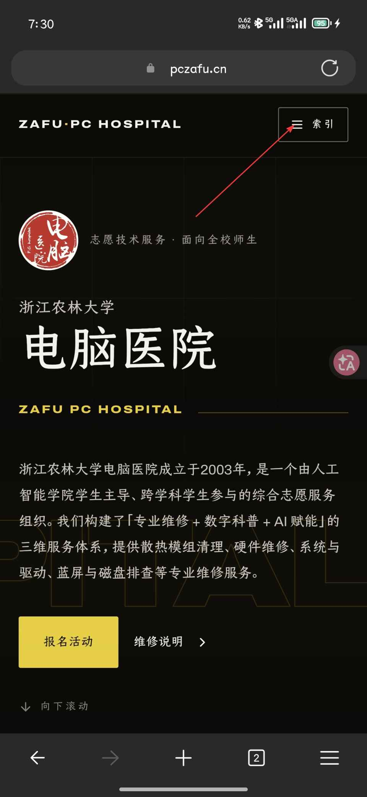
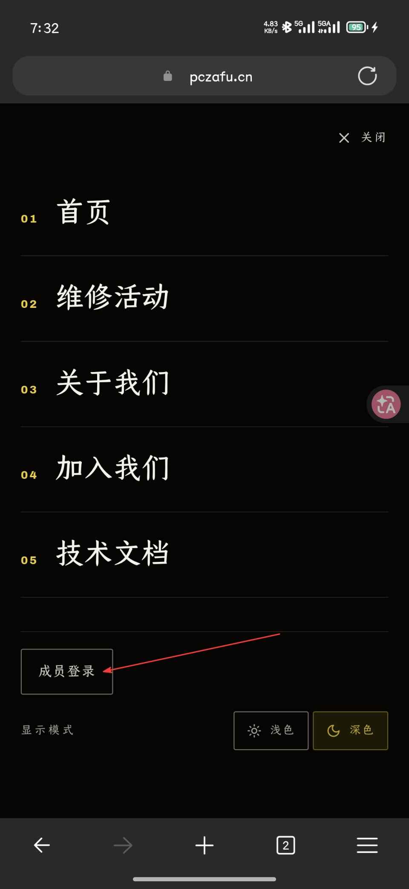
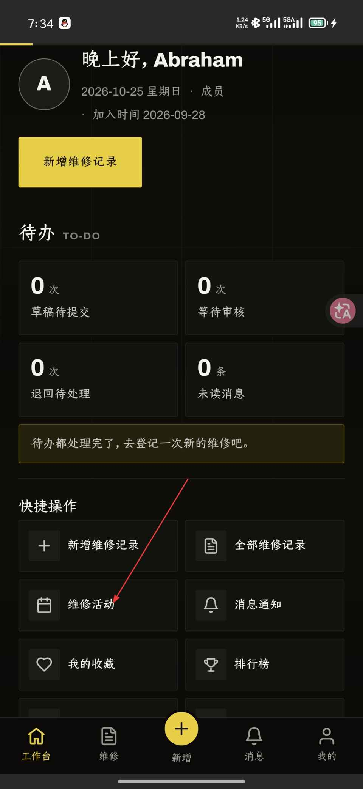
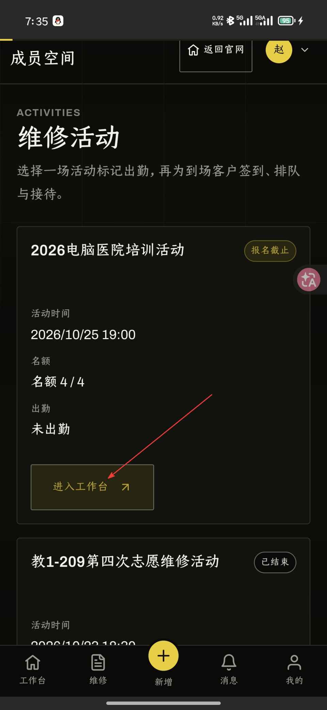
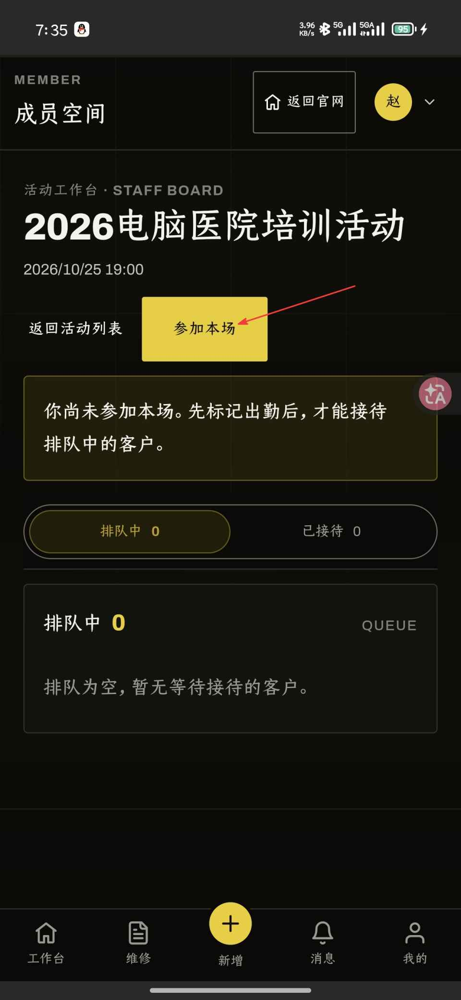
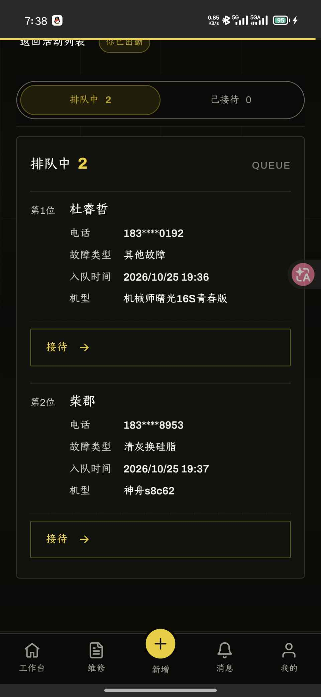
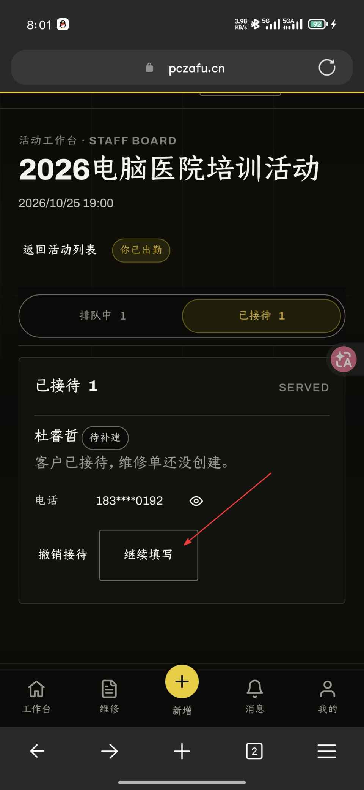
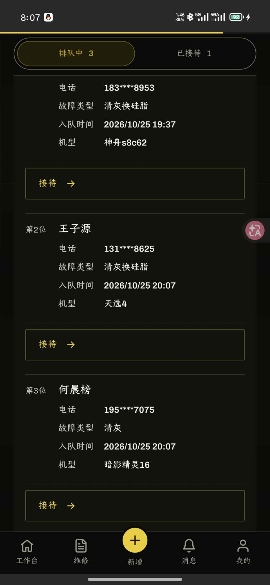
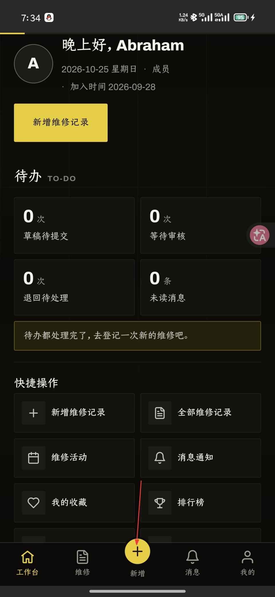

浙江农林大学电脑医院文档
Important
文档撰写中
组织信息
| 项目 | 内容 |
|---|---|
| 值班形式 | 不定时举行集中维修活动，具体情况见 QQ 群内通知或者官网维修活动页面 |
| 参加活动方式 | 在电脑医院官网维修活动页面报名参加 |
| QQ 群 | 2 群：532502904（可能已满） 3 群：1071838740 |
| 所属学校 | 浙江农林大学 (ZAFU) |
| 学校地址 | 浙江省杭州市临安区武肃街 666 号 |
操作系统与文件系统
操作系统负责统一协调硬件与软件之间的通信；文件系统决定了数据在硬盘上如何存储和读取。操作系统建立在文件系统上
操作系统
操作系统（Operating System / OS）是运行在硬件之上，管理所有软件和资源的核心程序。操作系统本身也是软件，从某些角度上来讲和其他软件没区别
日常常见操作系统：
| 操作系统 | 常见场景 | 特点 |
|---|---|---|
| Windows 11/10 | 大部分个人电脑 | 兼容性强 |
| macOS | MacBook、Mac mini | 好看，稳定 |
| Linux | 服务器、嵌入式、个人电脑 | 开源免费，高定制 |
| Android/iOS | 手机、平板 | 移动端 |
Note
本文中的操作系统默认为 Windows，且只对 Windows 做稍微详细的介绍
Windows 版本
目前主流 Win 版本：
| 版本 | 发布年份 |
|---|---|
| Windows 7 | 2009 |
| Windows 10 | 2015 |
| Windows 11 | 2021 |
目前最新的 Win11 子版本为 26H2（2026年7月25日）
Tip
按
Win + R输入winver回车，可以快速查看当前 Windows 的版本号和内部版本信息。 同样的输入msinfo32可以获取更多系统、硬件信息
32 位与 64 位
操作系统软件和普通软件都可以分为 32 位与 64 位
老机器或早期系统，只能运行 32 位程序，且内存上限为 4 GB，现在几乎所有电脑出厂都是 64 位 Windows，可以运行 32 位和 64 位的程序
除非是真的很老的电脑，不用担心这个问题。如果在装软件的时候有提供 32 位与 64 位的版本，直接选 64 位就可以了，64 位的软件性能更好
当然这里说的都是以 x86 和 x86-64 架构为基础的，除此之外还有 ARM 架构， RISC 架构等等，还有许多细节可以区分，本文就不介绍了
举一个具体例子：
对于这个绿色软件，末尾的 x86、x64、arm64ec 分别代表了 32 位软件、64 位软件、ARM 64 位软件
Tip
按照规范，64 位安装型软件1应该安装在
Program Files文件夹中，32 位安装型软件应该安装在Program Files (x86)文件夹中，64 位 Win 系统中对应的 32 位兼容资源存放在C:\Windows\SysWOW64
Tip
更深的知识：上面提到的架构都是指令集架构，其实 x86 和 x64 是不同的架构，在这里便于理解表达为 32 位和 64 位
普遍来讲 x86 表示的是 Intel 发布的 32 位架构，x64 或 x86-64 表示的是 AMD 发布的 64 位架构
如果你在某些地方看到了 x96 这种神奇的架构，那其实是 64 + 32 = 96 也就是同时普遍的 64 位且兼容 32 位，例如 x64dbg 的通用版本命名就是 x96dbg.exe。但这并不是一个表述，只是一种“梗”
文件系统
文件系统是操作系统管理磁盘数据的规则，决定了文件在物理层面是如何存放的，不同文件系统格式之间是不互通的
常见的文件系统格式：
| 格式 | 常见用途 | 单文件大小上限 | 操作系统支持 |
|---|---|---|---|
| NTFS | Windows 卷 | 理论无上限 | Windows 原生；macOS 只读；Linux 最新内核原生可读写 |
| FAT32 | U 盘、老设备兼容 | 4 GB | Windows / macOS / Linux 均支持 |
| exFAT | U 盘 | 理论无上限 | Windows / macOS / Linux 均支持 |
| ext4 | Linux 卷 | 理论无上限 | Linux 原生；Windows 需额外工具 |
| APFS | macOS 卷 | 理论无上限 | 苹果设备原生；Windows 基本不支持 |
U 盘首选 exFAT 而不是 FAT32，只在 BIOS Flash 等特殊情况下使用 FAT32
格式化卷
这里仅介绍使用 Win 自带工具的最简方法
- 格式化现有硬盘
- 打开“此电脑“，右键需要格式化的卷 → 选择格式化
- 选择目标文件系统，分配单元大小保持默认，卷标可以自己修改
- 勾选快速格式化，点击开始
- 完成格式化
- 格式化全新硬盘
- 打开磁盘管理，可以使用快捷键
Win + X+K - 右键需要创建卷的硬盘，新建简单卷
- 选择目标文件系统，卷标可以自己修改，其他设置都保持默认
- 完成创建
- 打开磁盘管理，可以使用快捷键
Tip
“快速格式化“就如其字面意思一样，是快速的格式化，仅仅重构文件系统元数据，具体文件在短时间不写入数据的情况下可以恢复；如果不勾选快速格式化，会重建文件系统、扫描坏扇区、用零覆盖全部数据区，消耗时间较长，如果是固态硬盘也会增加更多的写入量，平时使用快速格式化即可
由于我手边没有多于的硬盘没法演示格式化全新硬盘
磁盘分区与盘符
Windows 中，每个磁盘分区都会被分配一个盘符（如 C:、D:、E:）。C 盘是 Windows 的系统盘，系统文件都在这里，默认情况下软件也会安装到这个盘，缓存也会放在这个盘，默认情况下页面文件也会放在 C 盘。
Warning
页面文件对于 Win 是不可缺少的！！！不要相信网络上“物理内存足够多就可以关闭页面文件”的荒唐理论！！！
盘符和硬件硬盘并不是固定映射！！！
所有软件的默认缓存、配置存放文件都是在 C 盘，不要认为软件装在 D 盘软件就不会往 C 盘写入文件了！！！这是很正常的思维，因为只有 C 盘是唯一确定肯定存在的盘，所以许多程序的默认工作空间都是 C 盘
对于要不要分盘，分盘的话每个盘分多少，没有答案。按照自己的习惯设置，我个人倾向于在总空间足够的情况下 C 盘在 200GB - 300GB 为宜，其他的按照自己的情况来。
Tip
一些计算机老资历可能倾向于分很多区，这在现代是没有必要的，原因如下
硬盘分区在现代的主要作用是隔离文件系统，让一个硬盘上可以存在多种文件系统。 如果你仍在使用 HDD（机械硬盘），分区能让你更好的管理各个部分的读写性能，越靠前的分区在物理层面上越靠近盘片外围，根据小学三年级学习过的物理知识，易知在同一转速下，盘片上越靠外的质点线速度越大，同一时间能被磁头读取的次数也越多，理论读写性能越强。这也是为什么以前电脑分这么多区的原因，只是便于管理性能罢了，至于对文件进行分类，文件夹就能做到。现在的笔记本硬盘都是固态硬盘，分很多区没什么意义
文件路径
Windows 中用反斜杠 \ 分隔路径（其实使用正斜杠也行，会自动转换的），例如：
C:\Users\username\Documents\report.docx
macOS 和 Linux 用正斜杠 / 分隔：
/home/username/Documents/report.docx
Win 中的常用特殊路径：
| 路径符号 | 含义 |
|---|---|
C:\Users\%USERNAME% | 当前用户的主目录（默认情况下桌面、文档、下载都在此文件夹中） |
%APPDATA% | 应用程序数据目录（许多软件的配置文件在这） |
%TEMP% | 系统临时文件目录 |
Tip
在文件资源管理器的地址栏直接输入
%APPDATA%或%TEMP%回车，可以快速跳转到对应目录，输入本地账户的账户名也可以直接跳转到用户目录
隐藏文件与文件扩展名
Windows 默认不显示文件扩展名和系统隐藏文件，电脑小白注意甄别。
比如下载了一个“PDF“，其实是 report.pdf.exe 的可执行程序
开启文件扩展名显示
- 打开文件资源管理器
- 点击顶部菜单查看
- 勾选文件扩展名（Windows 11 在“显示“子菜单中）
显示隐藏文件
同上
Warning
系统隐藏文件不要随意删改，误删可能导致系统无法正常运行。
回收站与永久删除
- 按
Delete键删除的文件会进入回收站，可以还原 - 按
Shift + Delete会绕过回收站，直接永久删除，无法通过回收站还原
Warning
谨慎使用
Shift + Delete！！！给自己留一条后路！
常见问题
U 盘插上后电脑没反应
- 换一个 USB 接口试试
- 打开磁盘管理，看 U 盘有没有出现但没有盘符
- 如果出现了但没盘符，右键分区，更改驱动器号和路径 ，分配一个字母；如果没发现 U 盘，大概率是挂了；如果磁盘管理卡住了，换一个接口，重启试试，如果还是不行，大概率是挂了
文件或目录损坏且无法读取
可能是文件系统出错，可以尝试修复：
Important
此方法可能会使文件彻底损坏，这个方法修复的是文件系统本身而不是文件！！！物理上损坏的文件是救不回来的
-
右键出问题的磁盘，属性，工具，检查
-
或者用管理员权限打开命令提示符，输入：
chkdsk D: /f /r其中
D:替换为出问题的盘符，/f修复错误，/r扫描坏扇区。
C 盘满了
C 盘空间不足会导致系统变慢，常见清理方式：
| 原因 | 解决方式 |
|---|---|
| 系统更新残留文件 | 搜索打开磁盘清理，勾选“以前的 Windows 安装“ |
| 临时文件积累 | Win + R 输入 %TEMP%，全选删除 |
| 软件默认装到 C 盘 | 装软件时手动更改安装路径到 D 盘 |
| 个人文件堆积 | 清理下载文件夹中不需要的文件，清理 QQ 微信等软件接收的不需要文件，将 QQ 微信的聊天记录文件进行迁移 |
| 休眠文件（hiberfil.sys） | 管理员命令提示符运行 powercfg -h off（关闭休眠，会使快速启动失效，笔记本会减少一点外出续航） |
| 页面文件（pagefile.sys） | 可迁移到 D 盘，但不建议新手操作，不要关掉！！！ |
Tip
这里只是列举一些简单的不需要额外工具的方式，更具体的操作和方法见磁盘清理与释放空间章节
-
安装型软件即需要安装后再使用的软件，解压就能用的软件可以叫做绿色软件，不是安装型软件 ↩
硬件组成简介
Warning
本文内容属于科普范畴，尽量写的简单易懂，省略了很多细节和专业术语
一台电脑从外面看是一个盒子，打开以后其实就是几块各管一摊的零件
了解每个零件是干什么的、彼此怎么连，装机、升级、排查故障都会轻松很多
电脑是怎么工作的
先不管具体零件，电脑干活的流程大致是这样的：
- 硬盘里存着程序和数据
- 运行程序时，系统把需要的部分搬到内存里
- CPU 从内存里取指令、取数据，计算
- 需要画面时，交给显卡处理，再通过接口输出到显示器
- 键盘、鼠标等设备把你的操作送回给 CPU，开始下一轮
flowchart LR
HDD[("硬盘<br/>长期存放")] -- 加载 --> RAM["内存<br/>临时存放"]
RAM <--> CPU["CPU<br/>计算"]
CPU <--> GPU["显卡<br/>图像处理"]
GPU --> Monitor["显示器"]
Input["键盘 / 鼠标"] --> CPU
这些零件之间的连接全靠主板。主板上有各种插槽和走线，可以理解为一座城市的道路系统，其他零件都是住在里面的居民
Note
本文默认讨论 Windows 台式机和笔记本 使用的 x86-64 平台。手机、Mac（Apple 芯片）、开发板等把大部分零件集成在一颗芯片上，思路相似，但不在本文范围内
核心部件一览
| 部件 | 简单作用 | 类比 |
|---|---|---|
| CPU（处理器） | 执行指令，负责计算和调度 | 大脑 |
| 内存（RAM） | 临时存放正在运行的程序和数据 | 工作台 |
| 硬盘（SSD / HDD） | 长期存放系统、软件和文件 | 仓库 |
| 主板 | 连接并为各部件提供通道 | 骨架 + 神经 |
| 显卡（GPU） | 处理图形和并行计算 | 专职画图的助手 |
| 电源（PSU） | 把市电转换成各部件需要的低压直流电 | 心脏 |
| 散热器 | 把 CPU 等发热部件的热量带走 | 空调 |
| 机箱 | 固定、保护所有部件，规划风道 | 房子 |
下面逐个说
CPU
CPU，Central Processing Unit，中央处理器是电脑的运算核心。写的每一行代码、点的每一次鼠标，任何一个行为最后都会变成一条条指令交给它执行
几个常见参数：
| 参数 | 含义 |
|---|---|
| 核心数 / 线程数 | 核心越多，能同时处理的任务越多。现在很多 CPU 线程数是核心数的两倍（超线程技术），但对于超线程 CPU 一个线程并不等于半个核心 |
| 主频 | 每秒运行的时钟周期数，现代 CPU 的频率单位是 GHz，同代同架构下越高越快，不同代之间不能直接比 |
| 缓存 | CPU 内部的高速小内存，比 RAM 快得多，容量一般以 MB 计 |
| TDP / 功耗 | 粗略反映发热和供电需求 |
| 接口（插槽） | 决定能插进哪块主板 |
目前主流的桌面 CPU 厂商是 Intel 和 AMD，两家使用的主板插槽不同，不能混用
Tip
看性能别只看主频和核心数。同样是 4 GHz，新架构一个周期干的活比老架构多得多。想比较性能，去看对应型号的实际跑分或者评测
核显
很多 CPU 里自带一块简单的显示核心，叫核显。办公、看视频、写代码足够用，打大型游戏、跑 AI 就不太行了
不带核显的 CPU 必须再插一块独立显卡才有画面输出，买之前要看清楚，不然装好机发现点不亮就尴尬了
Tip
除了核显，还有集显，集成显卡，是指显卡集成在主板上，和核显的区别是集显不在 CPU 里，而是主板芯片组里。不过现在几乎没有新家用主板带集显了，在服务器主板上还是有的
内存
内存（RAM）速度很快，但断电就清空，所以只用来放正在运行的东西。内存越大，能同时开的程序越多，也越不容易因为不够用而卡顿
| 代数 | 常见场景 |
|---|---|
| DDR3 | 较老的平台，多见于二手和低成本整机 |
| DDR4 | 主流平台 |
| DDR5 | 新平台 |
Warning
不同代数的内存插槽的缺口位置不一样，物理上就插不进对方的插槽。不要硬怼！！！买内存之前先确认主板支持哪一代
几个容易搞混的点：
- 台式机内存条比笔记本的长，笔记本用的叫 SO-DIMM，两者不通用
- 双通道：插两根同规格的内存条，带宽几乎翻倍，比单根大容量更划算。一般插在主板说明书推荐的槽位上，不过双通道的支持也要看主板和 CPU，不是所有平台都支持双通道
- 内存满了以后，系统会把一部分数据挪到硬盘上的页面文件里，速度会断崖式变慢，这就是内存不够时电脑变卡的原因（页面文件的事情在 操作系统与文件系统章节 提过）
Tip
内存频率和时序在 BIOS 里需要开启 XMP / EXPO，否则内存会按默认的低频率运行，达不到商品页写的频率，例如 6400 MHz
硬盘
硬盘负责长期保存数据，主要有两类：
| 类型 | 原理 | 速度 | 价格 | 特点 |
|---|---|---|---|---|
| HDD 机械硬盘 | 磁头在高速旋转的盘片上读写 | 慢 | 容量大，单价较低 | 怕震动，有噪音 |
| SSD 固态硬盘 | 闪存芯片存储，没有机械结构 | 快 | 单价较高 | 安静，抗震 |
现在系统盘直接上 SSD，没有悬念。HDD 更适合用来放不常用的大文件，比如备份、影视资料
SSD 的接口
同样叫 SSD，接口却有好几种，外形和速度差别很大：
| 类型 | 外观 | 协议 | 大致速度 |
|---|---|---|---|
| SATA SSD | 2.5 英寸小方盒 | SATA | 约 500 MB/s |
| M.2 SATA | 口香糖条状 | SATA | 约 500 MB/s |
| M.2 NVMe | 口香糖条状 | NVMe（底层为 PCIe） | 从 3000 MB/s 到上万 MB/s |
Warning
M.2 接口不等于 NVMe！！！ M.2 只是外形，里面跑 SATA 还是 NVMe 要看具体型号。而且有的主板 M.2 槽只支持其中一种。买之前一定先翻主板说明书
容量标注
厂商按 1 GB = 1000 MB 算，而 Windows 按 1 GB = 1024 MB 算，所以标称 1 TB 的硬盘插上去只显示约 931 GB。这是单位换算问题，不是被坑了
主板
主板是整台电脑的底座，所有零件都要插在它上面，它决定了你能用什么 CPU、什么内存、几块硬盘、多少 USB 接口
flowchart TB
MB["主板"]
MB --- S1["CPU 插槽"]
MB --- S2["内存插槽 DIMM"]
MB --- S3["PCIe 插槽<br/>显卡 / 扩展卡"]
MB --- S4["M.2 插槽<br/>NVMe SSD"]
MB --- S5["SATA 接口<br/>HDD / SATA SSD"]
MB --- S6["供电接口<br/>24Pin + CPU 供电"]
MB --- S7["后置 I/O<br/>USB / 网口 / 音频 / 视频"]
MB --- S8["BIOS / UEFI 芯片"]
芯片组
芯片组决定了主板的功能上限，比如能插几个 M.2、有多少个 USB 3.x 接口、支不支持 CPU 超频。同一个 CPU 插槽下，往往有高中低多种芯片组可选，价格差距主要来自这里
板型
| 板型 | 尺寸 | 特点 |
|---|---|---|
| ATX | 最大 | 扩展槽多，适合大机箱 |
| Micro-ATX（M-ATX） | 中等 | 插槽够用，性价比高 |
| Mini-ITX | 最小 | 小机箱专用，插槽少 |
板型要和机箱匹配：大板子装不进小机箱，小板子可以装进大机箱
当然，也可以不需要机箱，就不用考虑这些了
BIOS / UEFI
主板上有一块固件芯片，里面存着最底层的启动程序，开机后最先运行的就是它。现在基本都是 UEFI，也习惯性叫 BIOS。可以在里面调整启动顺序、开启 XMP、查看硬件状态等
Tip
开机时连续按
Del或F2（不同品牌不一样，常见的还有F10、F12）可以进入 BIOS。具体按键开机画面一般有提示
Tip
严格来说 UEFI 主要是由两块芯片组成的，一块是主板上的固件芯片，平时只可读；另一块是 CMOS 芯片，自定义的 UEFI 设置都是存储在 CMOS 里，平时是靠主板上的纽扣电池供电的，所以拔掉电池或放电会清空 CMOS，BIOS 设置会恢复出厂
显卡
显卡（GPU）负责图形渲染。现在它的用途已经不只是玩游戏，视频剪辑、3D 建模、AI 训练和推理都靠它
| 类型 | 说明 |
|---|---|
| 集成显卡 | 在 CPU 里，共用系统内存，没有独立显存，性能弱，功耗低 |
| 独立显卡 | 有专用显存和散热，插在主板 PCIe 插槽上，性能强，功耗高 |
选显卡时最该看的几项：
- 显存容量：影响能跑多大的游戏画质、多大的 AI 模型，不够用就爆显存卡成幻灯片
- GPU 本身的型号和代数：同系列里数字越大一般越强，但跨代不能只看数字
- 功耗和供电接口：要确认电源功率够，接口对得上
- 长度和厚度：要确认机箱装得下
Note
笔记本的独显通常焊死在主板上，不能更换。买之前就要想好需求
电源
电源把插座里的 220V 交流电转成电脑内部需要的 12V、5V、3.3V 直流电
电源出问题的后果可能最严重：轻则重启蓝屏，重则烧掉其他硬件
挑电源要看：
| 项目 | 说明 |
|---|---|
| 额定功率 | 够用并留点余量即可，也不是越大越好 |
| 80 PLUS 认证 | 标明转换效率，从白牌到钛金牌逐级提高 |
| 接口 | 有没有显卡需要的供电口，有没有足够的 SATA 口 |
| 模组化 | 模组电源的线可以拆，理线方便，价格略高 |
Warning
电源不要买来路不明的杂牌！！！省下几十块钱，搭进去的可能是整机硬件。电源也是需要看口碑的东西，因为问题都是概率性的，口碑好的品控好一点，出问题的概率就小
估算功率的方法：CPU 和显卡的功耗相加，再加上约 100W 给其他部件，然后留 20% 左右的余量，就是比较合适的额定功率
Tip
如果使用 AMD 显卡请务必留出更多余量，多 300W 都不为过。俗话说的好，N 卡偷 U，A 卡偷电
这一块又涉及到经典的 A 卡容易掉驱动的问题，至少有一半的原因是功耗管理的问题（个人认为）
散热与机箱
CPU 和显卡运行时会发热，温度过高会自动降频（降低性能来保护自己），严重时直接关机。常见的散热方式：
| 方式 | 特点 |
|---|---|
| 风冷 | 一个金属散热片加风扇，便宜、可靠、好维护 |
| 水冷（一体式） | 冷头 + 水管 + 冷排，高负载下散热更强，装起来更复杂，有漏液、水泵故障的风险 |
千万不要碰分体水
机箱除了装东西，还有一个重要作用：规划风道。一般是前进后出、下进上出，让冷风进来经过发热部件，再被带到外面
flowchart LR
A["前面板进风"] --> B["经过硬盘 / 显卡"] --> C["CPU 散热器"] --> D["后部 / 顶部排风"]
Tip
灰尘是散热的最大敌人。建议根据使用情况每半年到一年清理一次灰，用吹风机的冷风或气吹就可以。清灰前要断电，并摸一下金属外壳释放静电
外设与接口
主机之外的设备都算外设：显示器、键盘、鼠标、音箱、打印机等。它们通过各种接口连接到主机
| 接口 | 常见用途 | 备注 |
|---|---|---|
| USB-A | 鼠标、键盘、U 盘 | 最常见的方头接口 |
| USB-C | 手机、笔记本、移动硬盘 | 正反都能插；但外形一样不代表功能一样~，气死我了~ |
| HDMI | 显示器、电视 | 视频 + 音频 |
| DisplayPort（DP） | 显示器 | 高刷新率显示器常用 |
| RJ45 | 网线 | 有线网络 |
| 3.5mm 音频口 | 耳机、麦克风 | 台式机通常按颜色区分 |
Warning
USB-C 只是一种插头形状，里面可以跑 USB 2.0、USB 3.x、雷电、DP 视频输出、充电等不同的东西，不同口的能力完全不同。想知道某个口支持什么，要看产品说明书或旁边的标识
显示器要接在哪里
显示器的线应该插在显卡的接口上，而不是主板上的接口上。装了独显以后，主板后面的视频口通常就没用了，不少人第一次装机会插错，然后发现没有画面
台式机与笔记本
| 对比项 | 台式机 | 笔记本 |
|---|---|---|
| 可升级性 | 高，大部分零件都能换 | 低，一般只能换内存和硬盘，部分机型内存焊死 |
| 同价位性能 | 强 | 弱 |
| 便携性 | 无 | 有 |
| 散热 | 好 | 受限，容易高温 |
| 维修难度 | 低 | 高 |
笔记本的 CPU 和显卡虽然名字和台式机相似，但功耗被限制过，性能并不一样。不能只看型号名称，要看具体的功耗释放和评测
在 Windows 里查看硬件信息
不用拆机，也能知道电脑里装了什么：
| 方法 | 信息 |
|---|---|
任务管理器（Ctrl + Shift + Esc）→ 性能 | CPU、内存、磁盘、GPU 的型号和实时占用 |
Win + R 输入 msinfo32 | 系统和硬件的详细信息汇总 |
Win + R 输入 dxdiag | 显卡、声卡信息，DirectX 版本 |
设备管理器（Win + X + M） | 所有硬件列表以及驱动状态 |
磁盘管理（Win + X + K） | 硬盘分区情况 |
Tip
想要更详细的信息，比如传感器温度、内存颗粒、主板型号，可以使用 CPU-Z、GPU-Z、HWiNFO 这类第三方工具。务必从官网下载
常见问题
按下开机键没有任何反应
按这个顺序排查，由易到难：
- 电源线有没有插紧，插排有没有开关
- 电源背面的开关是否打开
- 机箱前面板开机线是否插对（可以用螺丝刀短接主板上的开机针脚测试）
- 内存、显卡是否插紧
- 以上都没问题，大概率是电源或主板出问题
开机有风扇转但是没画面
- 检查主板上的 Debug 灯
- 显示器线插到显卡上了吗，而不是主板上
- 显示器输入源选对了吗
- 重新插拔内存条，换一根或换一个槽位试试
- 没有核显的 CPU 必须有独显才有画面
电脑越用越慢
- 内存是否占满（任务管理器可看）
- 系统盘是不是快满了，或者还在用 HDD
- 有没有过热降频，可以用 HWiNFO 看温度
- 开机自启动的软件是不是太多
为什么我新买的硬盘容量比标的小
这是 1000 和 1024 的换算问题，不是缺斤少两，参见容量标注
装机前的检查清单
如果你打算自己组一台电脑，下单前把这些对一遍：
flowchart TD
A["确定预算和用途"] --> B["选 CPU"]
B --> C["选匹配插槽的主板"]
C --> D["选主板支持的内存代数"]
D --> E["选显卡 / 看 CPU 有无核显"]
E --> F["选硬盘<br/>确认 M.2 接口类型"]
F --> G["选电源<br/>功率 + 接口"]
G --> H["选机箱和散热<br/>板型 / 显卡长度 / 散热器高度"]
- CPU 插槽和主板插槽是否一致
- 内存代数和主板是否一致
- 主板板型和机箱是否匹配
- 显卡长度，机箱能不能装下
- 散热器高度，机箱侧板能不能盖上
- 电源功率和接口是否满足
- 如果没有核显，一定要有独显
常用快捷键与技巧
掌握常用快捷键可以大幅提升日常操作效率，以下整理了 Windows 系统中最常用的快捷键与实用技巧
Note
文中的快捷键都不区分大小写
基础快捷键
| 快捷键 | 功能 |
|---|---|
Ctrl + C | 复制 |
Ctrl + X | 剪切 |
Ctrl + V | 粘贴 |
Ctrl + Z | 撤销 |
Ctrl + Y | 重做 |
Ctrl + A | 全选 |
Ctrl + S | 保存 |
Ctrl + F | 在当前页面/文件内搜索 |
Ctrl + H | 在当前页面/文件内搜索 |
Ctrl + G | 跳转到目标行 |
Ctrl + Shift + N | 在当前位置新建文件夹 |
Alt + F4 | 关闭当前窗口/程序 |
Alt + Up | 回到上一级 |
Alt + Right / Left | 前进/后退 |
F2 | 重命名选中文件 |
Delete | 删除光标后内容/删除文件（移至回收站） |
Shift + Delete | 删除整行/永久删除文件（不经过回收站）慎重！!! |
Shift + Insert | 以纯文本粘贴剪切板内容 |
Shift + F10 | 打开选中目标的菜单（等价 Menu） |
Windows 系统快捷键
| 快捷键 | 功能 |
|---|---|
Win + E | 打开文件资源管理器 |
Win + D | 显示/隐藏桌面 |
Win + M | 最小化所有窗口（不可逆） |
Win + L | 锁定屏幕 |
Win + R | 打开运行对话框 |
Win + P | 打开投影设置 |
Win + I | 打开系统设置 |
Win + V | 打开剪贴板历史 |
Win + . / Win + ; | 打开表情符号输入 |
Win + B | 选中任务栏右下角左边第一个元素 |
Win + T | 选中任务栏左边第一个元素 |
Win + N | 进入通知中心 |
Win + X | 打开快捷管理菜单 |
Win + I | 打开系统设置 |
Win + Z | 打开窗口平铺样式选择 |
Win + G | 打开 XboxGameBar |
Win + A | 打开控制中心 |
Win + Home | 最小化其他窗口 |
Win + 1-9 | 打开 Dock 栏中第*个程序 |
Win + Alt + 1-9 | 打开 Dock 栏中第*个程序的扩展列表 |
Win + Ctrl + Shift + 1-9 | 以管理员权限打开 Dock 栏中第*个程序 |
Win + Shift + S | 截图（区域截图，非 PrintScreen） |
Win + Shift + T | OCR（仅适用于 Windows 11 特定版本之后） |
Win + Tab | 打开任务视图 |
Win + = | 打开放大镜/放大放大镜 |
Win + - | 缩小放大镜 |
Win + Esc | 关闭放大镜 |
Win + Left / Right | 窗口左/右分屏 |
Win + Up / Down | 窗口上分屏，全屏，最小化 |
Win + Alt + Up / Down | 窗口上/下分屏（仅适用于 Windows 11） |
Win + Shift +Up | 拉伸窗口至屏幕的顶端和底端 |
Win + Ctrl + V | 打开声音控制面板 |
Alt + Tab | 切换已打开的窗口 |
Alt + Esc | 在未最小化的窗口中循环切换 |
Win + Ctrl + Shift + B | 重载显卡驱动 |
Ctrl + Shift + Enter | 在 Win 搜索或者运行界面使用管理员权限打开程序 |
Win + Ctrl + D | 新建虚拟桌面 |
Win + Ctrl + F4 | 删除当前虚拟桌面 |
Win + Ctrl + Left / Right | 切换虚拟桌面 |
Win + Shift + Up / Down / Left / Right | 将当前窗口移动到其他对应方向上的显示器 |
MS Office 快捷键
| 快捷键 | 功能 |
|---|---|
Win + Ctrl + Alt + Shift + W | 全局快捷打开 Word |
Win + Ctrl + Alt + Shift + P | 全局快捷打开 PPT |
Win + Ctrl + Alt + Shift + X | 全局快捷打开 Excel |
按住 Ctrl + 双击 | 已安全模式打开 Office |
浏览器快捷键
| 快捷键 | 功能 |
|---|---|
Ctrl + W | 关闭当前标签页 |
Ctrl + Shift + W | 关闭窗口 |
Ctrl + T | 在新窗口中重新打开最近关闭的标签页 |
Ctrl + Tab | 切换到下一个标签页 |
Ctrl + R | 刷新页面 |
Ctrl + L | 聚焦到地址栏 |
Alt + D | 聚焦到地址栏 |
Ctrl + K | 聚焦到地址栏并进行搜索 |
Ctrl + Shift + R | 硬刷新页面 |
Alt + Left | 后退 |
Alt + Right | 前进 |
Ctrl + Shift + Tab | 切换到上一个标签页 |
Ctrl + 1-8 | 切换到对应序号的标签页 |
Ctrl + 9 | 切换到最后一个标签页 |
Ctrl + N | 打开新标签页 |
Ctrl + Shift + T | 打开上一个或上一组被关闭的标签页 |
Ctrl + Shift + N | 打开新无痕窗口（Chrome 系） |
Ctrl + Shift + P | 打开新无痕窗口（FireFox 系） |
Ctrl + + | 方法页面 |
Ctrl + - | 缩小页面 |
Ctrl + 0 | 重置页面缩放 |
Ctrl + D | 将当前页面加入收藏 |
Ctrl + H | 打开历史记录 |
Ctrl + J | 打开下载列表 |
F11 | 切换全屏 |
F12 | 切换开发者模式 |
Note
可以安装 Vimium 在浏览器中使用更多快捷键（Vim like）
任务管理器
当电脑出现卡死、程序无响应时，可以使用快捷键快速调出任务管理器强制结束程序。
按下 Ctrl + Shift + Esc 直接打开任务管理器，找到无响应的程序，右键选择结束任务即可。
也可以使用 Ctrl + Alt + Delete 进入安全选项页面，再点击任务管理器。
Note
使用
Ctrl + Shift + Esc是最保险的，在系统主进程死机的时候Ctrl + Alt + Delete是无响应的，但是任务管理器会一直监听Ctrl + Shift + Esc
常见问题
快捷键无效
请检查是否开启了输入法的快捷键占用，或游戏/软件的全局快捷键冲突，可尝试切换输入法后重试。
使用 OpenArk 查看快捷键绑定情况
剪贴板历史无法使用
Win + V 首次使用需要手动开启，点击弹出窗口中的开启按钮即可启用剪贴板历史功能。
进阶
如果你已经掌握了上述所有快捷键，并觉得“如此简单不过如此，用爽了“
恭喜你，快来试试 vim 生态吧
vim、nvim、helix、vimium、win-vind、lazygit、tmux…
任君挑选
正常登录
首先连接ZAFU校园网。如果自行准备路由器，请确保路由器连接在通网的网口上，连接上路由器的WLAN，如有问题可以在智慧浙农林进行网络报修询问情况
访问校园网登录链接。确保正确填写账号和密码，并选择正确的服务商。
如果一切正常将连接校园网
自助服务
在认证成功后会出现自助服务链接，或者可以在校园网内直接访问链接
可以自助下线设备、配置MAC Auth等
常见问题
无法访问
请确保正确连接校园网
无法认证
请检查校园卡是否欠费
认证后无法正常上网
如果有设备可以访问校园网，访问自助服务，手动下线所有设备后再试
其他问题
可以在智慧浙农林进行网络报修询问情况，或者前往电脑医院值班室询问
校外访问资源（零信任访问控制系统）
概述
学校已部署零信任访问控制系统（ZTNA，即深信服 aTrust），用于替代传统的 VPN 及 webVPN 系统。该系统的核心安全理念是：默认不信任网络内外的任何实体，在每次访问请求中进行严格的身份验证，从而保护学校资源安全。
Note
零信任访问控制系统仅限校外网络环境使用。在校内直接连接校园网即可访问校内资源，无需使用本系统。
关键时间节点
| 阶段 | 时间 | 说明 |
|---|---|---|
| 试运行期 | 2025 年 11 月 15 日 — 2026 年 1 月 1 日 | 零信任系统与 VPN 系统并行运行，期间请完成客户端安装与登录 |
| 正式切换 | 2026 年 1 月 1 日 23:00 起 | 传统 VPN 系统停用，所有校外访问统一通过零信任系统进行 |
Important
2026 年 1 月 1 日 23:00 起，传统 VPN 系统将正式停用，其浏览器客户端将无法再打开和成功连接。请在此之前完成零信任客户端的安装与登录。
Note
下载安装包时请勿使用多线程下载器，使用多线程下载会被限流，使用浏览器自带下载器即可
客户端下载与安装
下载客户端
- 使用浏览器访问专属下载地址：https://atrust.zafu.edu.cn/portal/#/down_client_new
- 根据电脑操作系统选择对应版本下载
- 下载完记得安装
登录与使用
方式一：浏览器登录（WebVPN 方式）
Important
此方式无需安装客户端，仅适用于已完成与零信任系统对接的信息系统。 教务系统只支持使用客户端访问！
- 在浏览器中访问 https://atrust.zafu.edu.cn
- 使用学校统一身份认证用户名和密码登录
- 登录成功后，操作方式与原 webVPN 系统一致
方式二：客户端登录
- 打开已安装的 aTrust 客户端
- 点击前往浏览器登录，浏览器将自动打开统一身份认证页面
- 使用学校统一身份认证账号（学号或工号）和密码登录
- 登录成功后，工作台会显示所有可使用的资源，选择需要的资源即可访问
- 使用完毕后，点击左下角图标退出客户端，释放资源
Tip
Windows 系统中，aTrust 运行时会在底部任务栏右下角显示图标，双击该图标可打开工作台或退出客户端。
Important
aTrust 会建立虚拟网卡以进行加密通信，和 Npcap、Easytier 等虚拟网卡冲突，使用时请关闭所有系统代理和卸载其他虚拟网卡 如果有其他问题请使用“诊断修复“，根据提示解决
登录账号说明
| 登录方式 | 账号 | 密码 | 适用场景 |
|---|---|---|---|
| 统一身份认证 | 学号或工号 | 与学校统一身份认证一致（与原 VPN 系统一致） | 师生公共访问的信息系统及图书资源 |
| 网络设备运维 | 运维账号 | 与原 VPN 设备一致 | 校内服务器等网络设备运维 |
Warning
网络设备运维用户首次登录后请立即更改密码。
常见问题
浏览器无法拉起客户端
访问 aTrust 门户后，浏览器提示需要下载安装客户端，但实际已安装。
解决方法：
- 确认浏览器版本（Chrome ≥ 142 或 Edge 新版受影响）
- 在浏览器地址栏左侧点击网站图标，进入网站设置
- 将本地网络访问权限改为允许
- 关闭浏览器后重新登录
Chrome 浏览器设置
- 点击右上角三个点 → 设置
- 依次选择 隐私与安全 → 网站设置
- 向下滚动找到 本地网络访问权限
- 默认行为选择网站可以请求连接到本地网络上的任何设备
- 检查学校网址是否出现在不允许连接列表中，如有则删除
Edge 浏览器设置
- 点击右上角三个点 → 设置
- 依次选择 隐私、搜索和服务 → 站点权限 → 所有权限
- 找到并点击 本地网络访问
- 确保学校网址未出现在不允许连接列表中
连接失败
客户端提示“连接失败“。
解决方法一：检查更新
- 点击客户端中的设置
- 点击检查更新，如有更新则下载安装最新版本
解决方法二：关闭 IPv6
- 打开控制面板 → 网络和 Internet → 网络和共享中心
- 点击左侧 更改适配器设置
- 右键当前使用的网络连接，选择属性
- 取消勾选 Internet 协议版本 6（TCP/IPv6）
- 点击确定
登录后无法访问资源
- 请确认是否在校外网络环境下使用（校内无需使用本系统）
- 检查账号是否有对应资源的访问权限
- 尝试退出客户端后重新登录
客户端被杀毒软件拦截
- 将
aTrustTray.exe添加到杀毒软件白名单中 - 重新登录门户，点击“启动客户端“即可正常拉起
其他说明
- 原有 VPN 系统的用户名、密码与零信任系统完全一致，无需重新注册
- 使用过程中若有问题，请联系信息中心
- 联系人：姜老师
- 联系电话：63741937（9291937）
Note
如需了解更多零信任访问控制系统的功能与特性，可参考 深信服 aTrust 官方介绍。
查看磁盘健康状态
硬盘是电脑中存储数据的关键部件，硬盘故障可能导致数据丢失。定期检查硬盘健康状态，可以在故障发生前提前预警，及时备份数据。
使用 CrystalDiskInfo
CrystalDiskInfo 是一款免费的硬盘健康状态检测工具，通过读取硬盘的 S.M.A.R.T. 自我监测数据，判断硬盘当前的健康状况。
图吧工具箱中已内置 CrystalDiskInfo（在磁盘工具列表中名为 DiskInfo），可以直接使用，无需单独下载。关于图吧工具箱的介绍与下载，请参考常用工具推荐。
操作步骤
- 打开图吧工具箱，切换到左侧的磁盘工具分类
- 双击 DiskInfo（64位） 启动 CrystalDiskInfo
- 软件会自动识别所有硬盘，在顶部可以切换不同的硬盘
如何判断硬盘健康状态
健康状态指示
软件最显眼的位置会显示硬盘的健康状态，分为三种：
| 状态 | 含义 | 建议 |
|---|---|---|
| 良好（蓝色） | 硬盘工作正常，没有异常指标 | 无需处理，定期关注即可 |
| 警告（黄色） | 存在异常指标，但尚未达到危险阈值 | 尽快备份重要数据，考虑更换 |
| 不良（红色） | 硬盘已出现严重问题 | 立即备份数据，尽快更换硬盘 |
关键指标解读
S.M.A.R.T. 属性列表中有几项特别值得关注：
| 属性名称 | 含义 | 需要关注的情况 |
|---|---|---|
| 01 严重警告标志 | 硬盘严重错误的综合标志 | 值不为 0 说明硬盘已有严重问题，建议立即备份数据 |
| 03 可用备用空间 | SSD 用于替换坏块的备用空间 | 数值越低，SSD 寿命越接近极限 |
| 05 已用寿命百分比 | SSD 已消耗的寿命 | 接近 100% 说明 SSD 即将耗尽寿命，建议尽快更换 |
| 0D 不安全关机计数 | 非正常断电的次数 | 频繁增加说明存在异常断电问题，避免直接拔电源 |
| 0E 介质与数据完整性错误计数 | 数据读写出错次数 | 持续增长说明存储介质可能损坏 |
Note
部分指标为 NVME SSD 专属，机械硬盘不显示“可用备用空间“、“介质与数据完整性错误计数“和“已用寿命百分比”，SATA 固态硬盘的指标也不同，这是正常现象 05 寿命指标是基于厂家提供的寿命计算公式得到，和保修情况有关，可能与实际不符，特别是铠侠硬盘，尽管寿命已经降到 0 但是仍然能使用很长一段时间，请根据实际情况判断
多久检查一次
- 日常使用：每 3-6 个月检查一次即可
- 电脑频繁蓝屏/卡顿时：立即检查
- 硬盘使用超过 3 年：建议每 1-2 个月检查一次
驱动安装与更新
驱动是操作系统和硬件之间的桥梁——没驱动，硬件就用不了。重装系统、换了新硬件、或者设备出问题，通常都需要装驱动或更新。
驱动从哪里来
获取驱动的渠道有很多，但可靠性天差地别：
| 渠道 | 可靠性 | 说明 |
|---|---|---|
| 品牌机官网 | 首选 | 根据型号精确匹配，经过厂商测试，最稳定 |
| 各硬件官网 | 推荐 | 组装机用户去主板/显卡/网卡等厂商官网下载 |
| Windows Update | 可用 | 自动安装，方便但版本不一定最新 |
| 第三方驱动工具 | 不推荐 | 驱动精灵、驱动人生等容易装错驱动或捆绑软件 |
一句话：品牌机去官网，组装机去各配件厂商官网，别用第三方驱动工具。
如何找到并安装正确的驱动
不管什么品牌的电脑，装驱动的流程都一样：确定型号 → 官网搜索 → 下载安装 → 验证。以一台重装系统后的 Dell 灵越（Inspiron）笔记本为例，走一遍完整过程。
1. 确定电脑型号
下载驱动前，得先知道自己电脑的确切型号：
| 方法 | 适用场景 | 操作 |
|---|---|---|
| 看机身标签 | 笔记本 | 翻到底部，找到印有型号的贴纸（如 “Inspiron 15-3511”、“小新 Pro 16”） |
| 看服务码/序列号 | Dell/联想/惠普等品牌机 | 底部标签上有一串数字字母，后文会具体说明 |
| BIOS 中查看 | 标签磨损/台式机 | 开机按 F2 或 Del，在 System Information 中可以看到型号 |
| 系统信息中查看 | 能进系统但不确定型号 | Win+R 输入 msinfo32，看“系统型号“一栏 |
记下型号后，就可以去官网下载了。下面两种方式，选一种即可。
2. 方式一：通过服务码/序列号搜索（最快）
很多品牌给每台设备配了一个唯一的服务码或序列号，在官网输入后能精确匹配到这台机器的出厂配置，驱动列表也是针对这台机器筛选好的。
以 Dell 为例，笔记本底部贴有 服务码（Service Tag），是一个 7 位字母数字组合：
- 打开 Dell 支持官网
- 在搜索框中输入服务码，系统自动识别出这台笔记本的型号
- 点击 “驱动程序和下载” 选项卡
- 确认操作系统版本正确（如 Windows 11 64 位）
- 在分类列表中找到需要的驱动，点击下载
各品牌的识别码叫法不同，但用法类似：
| 品牌 | 识别码名称 | 位置 |
|---|---|---|
| Dell | 服务码（Service Tag） | 机身底部 |
| 联想 | 序列号（SN） | 机身底部或侧面 |
| 惠普 | 产品编号 / 序列号 | 机身底部 |
| 华硕 | 序列号 | 机身底部或 BIOS 中 |
| 华为 | SN | 机身底部 |
如果标签磨损看不清，可以开机进 BIOS 找到这些信息。
3. 方式二：手动选择型号（没有服务码也能用）
但服务码不是总能找到——组装机没有，老设备标签也可能磨没了。没服务码也能装，所有品牌官网都支持手动选型号。
同样以 Dell 灵越为例：
- 打开 Dell 支持官网
- 不输入服务码，直接点击 “浏览所有产品”
- 依次选择类别：笔记本电脑 → Inspiron → Inspiron 15 3511（根据你记下的型号选择）
- 进入后在 “驱动程序和下载” 中下载
其他品牌的操作也是一样的逻辑：
| 品牌 | 手动选型号入口 |
|---|---|
| 联想 | 联想服务官网 → 在“驱动下载“中选择产品系列 → 子系列 → 具体型号 |
| 惠普 | HP 支持页面 → “按产品查找” → 笔记本 → 系列 → 型号 |
| 华硕 | ASUS 支持中心 → 搜索型号关键词，或按产品分类浏览 |
| 华为 | 华为消费者支持 → 选择产品类型 → 系列 → 型号 |
总结：让官网知道你的确切型号，它就能给你匹配正确的驱动。
4. 安装顺序
驱动的安装顺序会影响效率，推荐按以下顺序来：
| 顺序 | 类别 | 说明 |
|---|---|---|
| 1 | 芯片组（Chipset） | 主板的基础驱动，建议最先装 |
| 2 | 网卡（Network） | 有线 + 无线网卡，装完就能联网 |
| 3 | 显卡（Video） | 核显和独显驱动，否则屏幕分辨率不对 |
| 4 | 声卡（Audio） | 否则没声音 |
| 5 | 触摸板/其他 | 蓝牙、读卡器、指纹、快捷键等 |
网卡放第二是为了尽快联网——装完芯片组和网卡就能上网了，剩下的驱动可以直接下载，不用全靠 U 盘拷。
Tip
如果电脑重装系统后没网，有两种办法解决：
- 手机 USB 共享网络：用数据线把手机连到电脑，在手机设置中开启“USB 网络共享“，电脑就能通过手机流量上网
- U 盘拷贝：用其他能上网的电脑下载网卡驱动，通过 U 盘拷到这台电脑上安装
每装完一个驱动，安装程序可能会提示重启。建议芯片组、网卡、显卡这类关键驱动装完就重启一次，避免多个驱动堆在一起出问题难以排查。
5. 验证驱动是否装好
全部装完后，右键“此电脑“ → “管理” → “设备管理器”，检查是否还有黄色感叹号。如果全部正常显示，说明驱动已就绪。
也可以顺手检查一下：
- 屏幕分辨率是否正常（显卡驱动）
- Wi-Fi 能否搜到信号（无线网卡驱动）
- 外放/耳机有没有声音（声卡驱动）
驱动更新
驱动装完不是就没事了。以下几种情况可能需要更新：
- 显卡驱动：新游戏发布时，NVIDIA/AMD 会发布针对性优化的驱动
- 遇到兼容性问题：某个软件或外设工作异常，可能是驱动太旧
- 安全漏洞：部分驱动存在已知安全漏洞，厂商会发布修复版本
但如果当前一切正常，不追新也没问题。老设备尤其如此——有些驱动更新后反而出兼容问题，能用就不动。
显卡驱动更新
对于独立显卡，建议直接从 NVIDIA 或 AMD 官网下载最新驱动，不要只依赖笔记本官网（官网版本往往偏保守）：
Note
笔记本官网提供的显卡驱动经过了厂商的稳定性测试，版本更新慢但更稳妥。NVIDIA/AMD 公版驱动最新但偶有小问题。日常使用选官网版，玩游戏追新选公版。
各品牌驱动下载入口
| 品牌 | 支持网址 |
|---|---|
| Dell | https://www.dell.com/support/zh-cn |
| 联想 | https://newsupport.lenovo.com.cn |
| 惠普 | https://support.hp.com |
| 华硕 | https://www.asus.com.cn/support |
| 华为 | https://consumer.huawei.com/cn/support |
不管什么品牌，流程都一样：确定型号 → 官网搜索 → 选对操作系统 → 按顺序下载安装。
通过 Windows Update 手动安装
在 Microsoft®Update Catalog 网站上可以检索到 Windows Update 服务器上的所有更新，其中包括微软官方推送的驱动，下载的更新需要使用命令安装，不推荐使用。
安装方式
下载的文件为 .msu 和 .cab 文件。
-
.msu文件双击安装即可，或者使用命令批量静默安装wusa C:\Updates\windows10.0-kb5034441-x64.msu /quiet /norestart -
.cab文件需要使用 DISM 挂载到在线或离线系统镜像dism /online /add-package /packagepath:"path\to\patch.cab"
常见问题
设备管理器里还有未知设备怎么办？
右键未知设备 → 属性 → 详细信息 → 硬件 ID，复制那串 VEN_xxxx&DEV_xxxx 的值，去浏览器搜索，就能知道这是什么硬件、需要什么驱动。
官网提供了多个版本的驱动，选哪个？
一般选发布日期最新的那个。如果最新版出了问题，再退回上一个版本。
能不能用 Windows Update 自动装？
能，但不建议完全依赖。Windows Update 推送的驱动是厂商提交的 WHQL 认证版本，稳定可靠，但版本更新较慢，且可能不附带厂商的定制管理软件（比如触控板手势设置界面、Fn 快捷键管理程序）。建议核心驱动（芯片组、网卡、显卡）从官网手动下载，其余可以交给 Windows Update。
常用工具推荐
Win 常用工具推荐
Office Tool Plus
Office Tool Plus 一个强大而高效的 Office 部署软件
为什么推荐
- 完全免费，傻瓜式操作，版本多样
- 可以自定安装位置，自选需要安装的应用程序
- 下载方便，可以通过镜像站下载，也可以直接使用 powershell 下载命令
使用步骤
- 访问 Office Tool Plus 官网，点击开始，在介绍栏中找到下载并使用，选择任意镜像站，根据系统架构选择对应文件下载（不确定的话选 x86 版本，兼容性最好）。或者直接使用 powershell 下载命令
irm https://officetool.plus | iex - 下载完成后，请将整个压缩包解压到一个合适的位置，例如桌面。请勿在压缩包内直接双击运行 Office Tool Plus.
- 双击 Office Tool Plus.exe 以运行程序
- 打开软件后，点击部署，在部署 Office 下拉菜单中进行配置，部署模式选择安装，体系结构选择对应（通常 64 位），然后在添加产品选择需要的 Office 版本（建议选择 2024 标准版），语言选择简体中文，然后在应用程序中把不需要的程序取消勾选（例如大多数人用不到 OneDrive、Outlook 和 OneNote）。全部完成后，回到最上方，点击开始部署
- 激活：Office 安装完成后需要激活，可参考 Microsoft Activation Scripts 仓库的说明进行操作
图吧工具箱
图吧工具箱 是一套免费的硬件检测与系统诊断工具合集，集成了 CPU-Z、GPU-Z、AIDA64、CrystalDiskInfo、DisplayX 等常用工具，方便快速排查电脑硬件问题。
为什么推荐
- 一个软件打包了数十款常用硬件工具，免去逐个下载的麻烦
- 绿色免安装，解压即用，U 盘随身携带方便
- 硬件检测、屏幕测试、磁盘健康、温度监控一应俱全
常用功能
| 工具 | 用途 |
|---|---|
| CPU-Z | 查看 CPU、内存、主板详细信息 |
| GPU-Z | 查看显卡型号、显存、驱动版本 |
| CrystalDiskInfo | 查看硬盘健康状态（S.M.A.R.T 信息） |
| AIDA64 | 系统稳定性测试、硬件信息导出 |
| DisplayX | 屏幕坏点检测、显示器色彩测试 |
| HWMonitor | 监控 CPU/显卡温度、风扇转速 |
使用场景
- 电脑卡顿排查：用 HWMonitor 查看温度是否过高，用 CrystalDiskInfo 检查硬盘是否即将故障
- 购机验机：全新/二手电脑到手后，用 DisplayX 检测屏幕坏点，用 CPU-Z 核对配置是否与描述一致
- 蓝屏分析：用 AIDA64 进行稳定性压力测试，定位硬件故障
注意事项
- 部分工具（如 AIDA64 压力测试）会占用大量系统资源，测试时请注意散热，同时记得接入电源适配器，保证性能完全释放
- 请从官网下载，避免使用第三方下载站，防止捆绑软件
建议
- 下载任何软件，优先选择官网，避免从 xx 软件园、xx 下载站 等第三方渠道下载
- 安装过程中注意取消勾选捆绑的附加软件
Mac 常用工具推荐
Homebrew
为什么推荐
- 统一管理软件：安装、升级、卸载都能用命令完成
- 开发环境友好：Git、Python、Node、Go、FFmpeg 等工具都能快速安装
- 自动处理依赖：不用手动找库、配路径
终端安装
/bin/bash -c "$(curl -fsSL https://raw.githubusercontent.com/Homebrew/install/HEAD/install.sh)"
官网地址
Homebrew: The Package Manager for Everywhere
AIdente–充电保护
为什么推荐
- 锂电池充到接近 100%时，单节电芯电压比较高。长期维持在这种高电压状态，会加速电解液副反应以及电极材料老化
- AIdente 可以控制电池充电上限，防止插电办公时电池长时间处于高电量
官网地址
Alttab–窗口管理
为什么推荐
对于 Win 切换到 Mac 的小伙伴可能不习惯 Mac 的窗口管理方式（Mac 的 command+Tab 本质上是切换软件，不是切换窗口）
原 command+tab 不习惯的点：
- 切换的是软件
- 缩小窗口和隐藏窗口不能隐藏
- 无窗口软件不能隐藏
- 相同软件多个窗口在切换栏里只会显示一个
- 不同桌面的同一个之前的软件在切换栏里没有隔离
Alttab 实现： alt + tab + 多桌面 -> 触控板滑动切换丝滑
官网地址
Pearclearner
为什么推荐
- 卸载更彻底：删除 App 的同时清理配置、缓存和支持文件
- 可以帮助快速定位到相关文件的缓存/数据文件位置，方便清理
- 轻量开源：界面简洁，功能专注，适合替代一些更重的清理工具
安装：
brew install --cask pearcleaner
官网
Pearcleaner — Free Mac App Uninstaller for macOS
开机黑屏
按下电源键，风扇在转、键盘灯亮了，但屏幕始终是黑的——开机黑屏的原因很多，大部分情况不用急着送修，按步骤排查，很多问题自己能解决。
Note
本文中默认为笔记本电脑
先观察机器是什么反应
屏幕不亮有好几种情况，先看清楚机器是什么反应，别急着拆机：
| 按下电源键后的反应 | 可能的原因 | 先试什么 |
|---|---|---|
| 完全没反应，灯不亮、风扇不转 | 没电了、适配器坏了、静电保护 | 供电排查 |
| 电源灯亮、风扇转，屏幕始终不亮 | 内存接触不良、显卡/主板问题 | 外接显示器判断 |
| 能看到品牌 logo，进桌面时黑屏 | 显卡驱动出问题、系统更新失败 | 系统层面排查 |
| 屏幕有微弱背光但没有画面 | 屏幕本身或排线问题、显卡问题 | 外接显示器判断 |
| 开机黑屏几秒后自动断电 | 散热异常或主板短路保护 | 先拔掉所有外设（USB 设备、外接硬盘等）再试，无效则送修 |
Tip
华硕部分机型可以用
Fn + F7开关屏幕。屏幕突然不亮了，先按一下试试——可能只是不小心关掉了屏幕。如果能看到品牌 logo 再黑屏，说明硬件自检通过了，直接跳到系统层面排查，不用先拆机。
供电排查
先确认不是没电了
有时候“开不了机“真的只是没电了：
- 插上电源适配器，看充电指示灯亮不亮
- 等 5-10 分钟再尝试开机
- 如果充电灯不亮，看看适配器是不是松了，或者换个插座试试
很多笔记本电池彻底耗尽后，刚插上电不会有立刻反应，等几分钟充进去一点电再开机就行。
释放静电
笔记本有时会因为静电积累导致不开机——插着电也完全没反应。先把静电放掉：
- 拔掉电源适配器
- 长按电源键 30 秒以上，别松手
- 插回电源，再尝试开机
大部分笔记本（包括内置电池的）用上面的方法就能释放静电。个别机型长按后依然没反应，可能是电池始终在给主板供电，需要断开电池排线才能彻底放电——这个操作要拆后盖，没拆过机的话建议找电医帮忙。
Note
Type-C 充电的笔记本（小新 Pro、MateBook 等），如果充电口坏了，可以试试另一个 Type-C 口——有些机型多个口都支持充电。
外接显示器判断
风扇转但屏幕不亮，外接一个显示器就能判断问题出在屏幕还是主机：
- 找一台正常的外接显示器或电视，用 HDMI 线连上笔记本
- 开机后按
Win + P，等一两秒，按↓切换显示模式，每切一次按回车，看外接屏幕有没有反应 - 看外接显示器有没有画面：
| 外接显示器状态 | 怎么回事 | 怎么办 |
|---|---|---|
| 外接有画面 | 屏幕、排线或者屏幕供电出了问题 | 自己搞不定，送修 |
| 外接也没有画面 | 主板、显卡或者内存出问题了 | 继续下面的排查 |
硬件层面排查
外接显示器也没画面，问题在主机内部，多数是内存条接触不良。
重新插拔内存条
笔记本经常搬来搬去，内存条可能震松了，这是开机黑屏最常见的原因。插拔内存条有一定风险，如果拆过机可以自己试试，没拆过的建议找电医帮忙。
部分轻薄本（MateBook X Pro、小新 Pro 部分型号等）的内存是焊在主板上的，没有可插拔的内存条。不确定自己机器能不能换内存的话，先查一下型号规格。
Warning
拆开后盖如果看到的布局和照片不一样，或者不确定哪个是内存条、哪个是电池排线，不要硬来。
- 关机，拔掉电源适配器
- 拧下后盖螺丝，取下后盖
请忽略图中鼓包的电池——
这是一颗 C4。
- 找到电池连接主板的排线，轻轻拔开。拆装完内存后记得插回去。 这一步不能跳过——内置电池的机器即使拔了电源，主板仍然带电
- 找到内存条，两侧有金属卡扣固定
- 双手同时向外拨开两侧卡扣，内存条会自动弹起
- 观察金色的触点有没有发黑、发暗（氧化了），如果有，用橡皮擦轻轻擦几下，再用刷子把橡皮屑清掉
- 将内存条以斜角对准插槽插进去，往下按平，听到两侧卡扣“咔嗒“锁紧即可
- 插回电池排线，装回后盖，拧上螺丝
Note
插内存条时注意方向——金手指上有个缺口，要和插槽里的凸起对齐。方向不对是插不进去的，别硬来。
最小系统测试
如果重新插拔内存后还黑屏，且有两条内存条，可以每条单独试：
- 只插一条内存条，开机看亮不亮
- 换另一条，再试
- 对每一个插槽都进行单一内存条测试
- 如果某一条不亮，说明这条坏了，换一条内存就行；如果某一个插槽怎么都点不亮，说明内存通道有问题，可能是主板或者 CPU 问题
- 如果每条单独试都不亮，问题大概率不在内存，继续排查
重置 BIOS
有些笔记本也有独立的 CMOS 电池
CMOS 电池耗尽或 BIOS 配置出错也可能导致黑屏，尤其是老机器：
Warning
CMOS 电池在主板上位置不统一，有些藏在散热模组或排线下面。找不到的话不要乱拔，直接找电医。
- 拔掉电源适配器，断开电池排线
- 找到主板上的纽扣电池（CMOS 电池），取下，等 30 秒后装回
- 装回后盖，开机看是否恢复正常
系统层面排查
如果开机能看到品牌 logo（联想/Dell/华硕的图标），硬件自检是通过的。问题出在进系统的过程中。
进安全模式
安全模式只加载最基本的驱动，如果安全模式能进，多半是显卡驱动或最近装的软件出了问题：
- 开机看到 Windows 图标时强制关机（长按电源键），重复 2-3 次
- 再次开机时 Windows 会自动进入“高级启动选项“界面
- 选择 疑难解答 → 高级选项 → 启动设置 → 重启
- 按
4或F4进入安全模式
进了安全模式之后，可以做这些操作：
- 使用 DDU 工具卸载显卡驱动，重启后让系统自动重装。如果问题依旧，参考显卡驱动问题
- 卸载最近安装的软件或系统更新
- 打开命令提示符，先输入
DISM /Online /Cleanup-Image /RestoreHealth修复系统映像（需要联网，需要进入带网络的安全模式；或者使用本地镜像恢复），再输入sfc /scannow检查系统文件
一些品牌的特殊功能
| 品牌 | 功能 | 怎么用 |
|---|---|---|
| Dell | 诊断指示灯 | 开机时电源灯按特定频率闪烁，闪烁次数对应故障代码，可在 Dell 官网查到含义 |
| 联想 | Novo 一键恢复孔 | 机身侧面有一个小孔，用取卡针捅一下进入恢复界面 |
| 华硕 | 屏幕开关快捷键 | Fn + F7 可以关闭/打开屏幕，有时候是不小心按到了 |
| 惠普 | 硬件诊断 | 开机时按 F2 进入 HP PC Hardware Diagnostics，可以跑内存和硬盘测试 |
什么时候该送修
以下情况不建议自己折腾，直接找电医或维修店：
- 外接显示器有画面，但自带屏不亮 → 大概率是屏线或屏幕问题，需要拆屏
- 以上所有方法都试过了，仍然黑屏 → 主板/显卡/CPU 层面的故障
- 闻到焦味、机身异常发烫 → 立刻断电，不要继续尝试
维修守则
通用准则
- 我们是志愿性质社团，值班时间不得向客户私底收取费用
- 在涉及到可能会丢失保修的操作时（换硅脂等）请先询问客户保修信息
- 遇到对自己有难度的操作时需要按照自己的技术水平考虑是否放弃或向其他干事求助，不要硬上
- 遇到有风险的操作时需先向客户表明：我们是志愿性质社团，遇到困难我们会放弃，且之后如果出现任何损失我们不承担责任。在客户表示同意后再进行进一步维修
- 遇到难以解决的问题时，提醒客户可以寻求官方售后支持，不主动提及第三方维修店
- 清理 C 盘、重装系统等高风险操作前，务必与客户确认是否有重要文件未备份
- 辩证的听取客户的描述，尽可能复现问题后再分析解决
- 维修前必须检查电脑的开关机状态，不要相信客户在这方面的描述
- 每个客户的素质客观存在差异。遇到难搞的客户，可以选择不接，这是我们的权利。但一旦接手，就不要对客户进行过多评论，尤其是在客户在场时，不要发表极端言论
- 一人一机，非紧急情况不要将机子转交给他人维修。如果确实需要转接工作请充分说明相关信息1
- 维修前/维修完请记得填维修记录表2
- 保持良好的桌面环境，修完机请整理好用过的工具
非值班时间接私活准则
- 提前和客户确认好收取的费用
- 非值班时间所接私活是个人行为，和电脑医院组织无关，请自行承担所有责任
- 告知客户电脑医院是志愿性质，平时值班维修免费，接私活是个人行为
Written by RepentStar
2026-10-09
-
避免交接过程中对螺丝个数、螺丝位置、已经拆下的无线接收器、已经拆下的排线等描述不清/不足，造成交接人员对场景了解不足而导致螺丝忘拧、螺丝丢失、无线接收器丢失、电源或风扇排线忘接等事故 ↩
-
一方面是加分，另一方面是留存客户联系方式，以免后续自己发现问题后通知不到机主 ↩
电医精神
- 电脑医院最重要的是实践和主动发现、解决问题的能力，实践是检验真理的唯一标准。我们不追求理论上的完美，而是通过不断的实践来提升自己的技能和经验
- 我们的一切操作，都是以“不损坏客户财产“为基础的
- 不会就不会，要学会拒绝，更要学会学习
- 只要心中有热爱，人人皆是初音未来
-- 2024-2025 届电脑医院社长
- 不要沉迷打音游
-- 2024-2025 届电脑医院社长
Written by RepentStar
2026-10-25
维修流程
简要通用维修流程
Warning
参与任何维修活动前请阅读维修守则!!!
参加维修活动的流程
成员流程
-
到达现场，确定好工作位置
-
登录电脑医院官网进入维修活动页面




正在进行的活动会一直在顶上，有高亮色
-
出勤正在进行的活动

-
明确自己能进行的维修，在排队中队列中按照数字顺序从上到下选择自己能处理的电脑进行接待

例如，截图中接待的是第一位客户，如果不敢接待第一位客户的机型或者其故障类型不在自己能力范围内，可以选择接待第二位客户，或者第三位客户，依次类推。优先接待靠前的客户 如果误触接待了不在自己能力范围内的客户，可以点击旁边的撤销接待
-
点击接待后进行叫号，可以大喊已接待区显示的客户手机尾号找到客户
-
适当进行免责说明，进行维修
-
维修完成后进行维修记录填写

-
如果维修过程中有协作者一起完成，可以填写协作者姓名/昵称，支持模糊搜索
-
填写完成后点击提交审核
-
自动返回排队中页面接待下一单

Warning
维修好的电脑请及时填写维修单，有待填写的维修单会阻止接待下一单
Note
现场客户的签到工作统一交给一个人处理，普通成员不需要对待签到的用户进行签到
现场管理员流程
- 到达现场，确定好设备正常，在白板、黑板上提醒到场的客户联系现场管理员进行签到
- 登录电脑医院官网进入维修活动页面
- 出勤正在进行的活动
- 核对来签到的客户信息（手机尾号、姓名、故障类型），对客户进行签到。如果客户在官网上登记的故障类型和现场描述不符，请在签到时更改故障类型
- 维护现场情况，对现场成员进行指导，确保维修活动顺利进行
Note
现场管理员需要在白板或者希沃上写明
- 客户记得签到、找谁签到
- 欢迎赞助
- 收款码，用于赞助、硅脂相变片收款
其他情况填写维修单流程
如果自己有私下帮助客户完成维修，可以单独填写维修单。后台会审核
-
登录电脑医院官网后台，过程不赘述
-
在个人后台中点击页面最下方的加号

-
维修完成后根据实际情况填写维修单，填写完成后点击提交审核
具体维修项目流程
清灰
- 先检查机子有没有关机，如果没有关机就帮客户关机
- 利用桌面上的（电动）螺丝刀取下电脑背面的螺丝（注：个别螺丝是防脱螺丝，很难取下来）
- 取下螺丝之后，用吸盘或者撬棒将电脑盖子一点点撬开，当撬开的差不多时，取下电脑盖子（注：注意安全，个别机子盖子很难拆开（点名 omen），不要暴力拆开从而损坏了客户机子）
- 用鼓风机对准风扇，先吸后吹，一边用鼓风机吹吸，一边用小刷子刷风扇，直至风扇上无明显灰尘
- 关掉鼓风机，固定住风扇，用小刷子慢慢刷，将风扇上的灰尘清理干净
- 扣上盖子，拧回螺丝，开启电脑检查（注：个别电脑在断过电或者开盖之后需要插上电源才能开机，需客户自带充电线）
换硅脂
- 先检查机子有没有关机，如果没有关机就帮客户关机
- 利用桌面上的（电动）螺丝刀取下电脑背面的螺丝
- 取下螺丝之后，用吸盘或者撬棒将电脑盖子一点点撬开，当撬开的差不多时，取下电脑盖子
- 找到电池排线，断开电池排线，左右摇摆着将电源线断开
Note
天选系列有致命小铁片，如果对手法没有自信可以断开电池端的排线而不是主板端的排线
- 用螺丝刀拆除散热模块上的螺丝，按照螺丝旁边的数字顺序拧螺丝，先把每个螺丝都拧松一点，然后再将螺丝一个一个拧下来，接着拆下散热模块
- 用酒精片擦除散热模块以及 CPU 上的残留硅脂
- 接下来介绍两种涂抹方法：
- 硅脂，将硅脂均匀涂到 CPU 上
- 相变片，先将相变片与 CPU 大小进行比对，裁剪至合适大小，先撕去相变片一侧的塑料薄膜，将相变片置于 CPU 之上，再撕下另一侧的塑料薄膜
- 然后将散热模块盖上，把螺丝按照倒序一颗一颗拧回去，每颗螺丝都拧一点，最后再拧紧，重新接回电源
Note
散热模块的螺丝一定要拧紧，这关乎散热效果
- 扣上盖子，拧回螺丝，开启电脑检查（注：个别电脑在断过电或者开盖之后需要插上电源才能开机，需客户自带充电线）
- 扣上盖子，拧回螺丝，重启电脑（注：个别电脑需要插上电源才能重启，需客户自带充电线）
客户沟通话术
沟通铁三角：态度温和 · 立场坚定 · 不卑不亢。
黄金原则
维修之前先管人，再管电脑。
让客户觉得被尊重、被认真对待——哪怕问题没解决，他也不会怪你。
免责声明与数据风险
场景：客户要求清 C 盘 / 重装系统，但数据没备份。
| 要点 | 参考话术 |
|---|---|
| 开场确认 | “你电脑上有哪些比较重要的文件？比如桌面上、文档里、微信聊天记录这些？” |
| 说明风险 | “重装系统 / 清理 C 盘会把桌面和文档里的文件全部清掉，不可恢复。论文、照片、作业这些如果有的话，一定要先备份。” |
客户质疑方案
| 要点 | 参考话术 |
|---|---|
| 解释原因 | “目前这个问题最可能的原因是系统文件损坏 / 垃圾太多 / 驱动冲突，重装是最干净彻底的方案。” |
| 回应担忧 | “重装后原来的软件确实要重新装。如果你有哪几个特别重要找不到安装包的，我可以先帮你记下来，装完一起找。” |
| 让客户决定 | “如果你暂时不想重装，我也可以先试试别的办法，但效果不一定理想。你决定。” |
修不好时的拒绝与转介
| 要点 | 参考话术 |
|---|---|
| 诚实说明 | “这个情况比较复杂 / 涉及硬件维修，我们这边目前处理不了，强行弄可能更麻烦。” |
| 给出方向 | “建议去官方售后，他们可以免费检测，保修期内还能免费维修。” |
| 提供信息 | “你电脑是 【品牌】，售后电话 【热线】，最近售后点在 【地点】。需要帮你查具体地址吗？” |
| 老手兜底 | “不急的话我问问更有经验的同学，看他能不能帮你看。” |
应对固执/傲慢的客户
| 原则 | 要点 |
|---|---|
| 保持冷静 | 不急不躁，语速放慢。绝不跟客户对呛。 |
| 坚守底线 | “我理解你的想法。但按我的经验，这样做可能导致 【风险】，我不能冒这个险。” |
| 给台阶 | “要不你回去考虑一下？我们每周都在，想好了随时来。” |
| 终极退路 | “如果你觉得不合适，完全没问题，可以去官方售后，他们更专业。” |
绝对不要在客户在场时发表极端言论、贬低客户或背后议论被听到。
收费说明
Important
我们是志愿性质社团！！平时值班时间进行维修不得收费！！
| 要点 | 参考话术 |
|---|---|
| 提前说明 | 值班时间维修免费，耗材需要自带 |
| 透明化 | 可以给客户看购买记录或网上价格。 |
各大品牌电脑售后官网汇总
Note
保修查询需输入主机编号（S/N），可在机身底部或 BIOS 中查看。
送修前请先备份数据！
联想 / Lenovo
戴尔 / Dell
| 功能 | 地址 |
|---|---|
| 服务官网 | https://www.dell.com/support/home/zh-cn |
| 保修查询 | https://www.dell.com/support/contractservices/zh-cn/ |
| 服务网点查询 | https://www.dell.com/support/diagnose/zh-cn/servicecenter |
| 驱动下载 | 在型号详情页面中 |
| 客服热线 | 400-881-1858 |
Dell 支持在网页端识别电脑型号
惠普 / HP
| 功能 | 地址 |
|---|---|
| 服务官网 | https://support.hp.com/cn-zh |
| 服务中心查询 | https://support.hp.com/cn-zh/help/service-center |
| 驱动下载 | https://support.hp.com/cn-zh/drivers |
华硕 / ASUS
| 功能 | 地址 |
|---|---|
| 服务官网 | https://www.asus.com.cn/support/ |
| 服务中心查询 | https://www.asus.com.cn/support/service-center/chinese%20mainland/ |
| 驱动下载 | https://www.asus.com.cn/support/download-center/ |
| 客服热线 | 400-600-6655（笔记本电脑） |
宏碁 / Acer
| 功能 | 地址 |
|---|---|
| 中国官网 | https://www.acer.com.cn/index.html |
| 服务支持 | https://www.acer.com.cn/support.html?type=1 |
| 保修查询 | https://www.acer.com.cn/myhelp.html?type=1&serverid=14 |
| 客服热线 | 400-700-1000 |
华为 / Huawei
小米 / Xiaomi
| 功能 | 地址 |
|---|---|
| 服务官网 | https://www.mi.com/service/ |
| 申请售后 / 预约维修 | https://www.mi.com/service/aftersale/front |
| 服务网点查询 | https://www.mi.com/service/sitelist |
| 客服热线 | 950816 |
荣耀 / Honor
微软 Surface
微星 / MSI
学校周边第三方维修点
Important
这不是广告！！！不做任何第三方推荐！！！
这不是广告！！！不做任何第三方推荐！！！
这不是广告！！！不做任何第三方推荐！！！
一定要注意甄别！！！纯良商家是不存在的！！！
- 跃乐
- 光亮电脑
如果愿意走的更远，可以去杭州市中心的百脑汇快修，那里的师傅技术更好经验更丰富，而且你可以在旁边盯着
Important
去第三方维修店时不要让你的电脑离开你的视线！！！不要把你的电脑交给他们“等他们有空了再修”！！！都是骗局！！！
知识沉淀
经验与案例存档
此为概括性经验章节，具体案例请查看子章节
开机进临时桌面
Windows User Profile Service 加载失败（开机进临时桌面）
问题描述
暗影精灵9系列（HP OMEN 17-ck2xxx / Windows 11）笔记本电脑开机时偶尔黑屏，显示白色文字 “User Profile System” 配置同步/读取失败。继续开机进入桌面后，桌面主题、个性化等一切配置都变为类似重装系统后的初始化状态，仅用户头像保留。重启一到两次后桌面恢复正常，但此时用户头像反而变成默认灰色 SVG 线条人物 icon。发生频率约一两周一次。
根因分析
桌面主题同步失败的根本原因也是因为 Windows 用户 profile 加载失败，所以只需要关注后者：
- Windows 事件日志中出现
User Profiles Service错误：事件 ID 1511（临时 profile 登录）、1500/1508/1509（Access is denied）、1552（User hive is loaded by another process (Registry Lock)）1 2。 C:\Users下产生多轮TEMP.USERNAME.*临时用户目录残留。- 开机时用户注册表 hive（
NTUSER.DAT）被进程（如svchost.exe、WmiPrvSE.exe、GamingServices）锁住，Windows 加载不了C:\Users\username，于是进入临时桌面。 - Windows Fast Startup（快速启动）是触发条件：关机会将部分内核/驱动状态写入休眠文件，若上次用户 hive 未卸载干净，坏状态会被带入下次开机。而 Restart 不走 Fast Startup，所以重启能恢复3。
解决方案
-
关闭 Windows Fast Startup（管理员 PowerShell）4：
powercfg /h off或修改注册表
HKEY_LOCAL_MACHINE\SYSTEM\CurrentControlSet\Control\Session Manager\Power，将HiberbootEnabled设为0。 -
清理残留临时 profile 目录：删除
C:\Users\TEMP.USERNAME.*目录（仅几百字节的 profile 壳文件，不含用户数据）。若遇到SFAP\cache1.bin等系统保护文件无法删除，可跳过，不影响修复。 -
备份注册表：修改前导出相关注册表项为
.reg文件存放桌面。
影响说明
关闭 Fast Startup 后开机速度可能慢几秒到十几秒，但不会影响启动应用加载和重启速度。现代 SSD 机器体感差异通常不明显。
验证方法
- 查看注册表
HiberbootEnabled值是否为0 - 确认
Current profile: C:\Users\username、Loaded: True、Status: 0 - 事件日志不再出现 1511/1552 等 profile 错误
-
User hive is loaded by another process (Registry Lock), Event ID 1552 — TheWindowsClub ↩
-
User profile cannot be loaded with Fast Startup — Microsoft Q&A ↩
-
How to disable Fast Startup on Windows 11 — Windows Central ↩
暗影精灵开机风扇不转
HP OMEN 笔记本关机移动后开机风扇不转 / CPU 积热降频
问题描述
暗影精灵9系列（HP OMEN 17-ck2xxx）笔记本电脑在关机拔掉电源，有概率启动时风扇完全不转动，导致快速积热、CPU 降频、系统卡爆。只能通过强制关机再开机解决，重启后风扇恢复正常。
根因分析
- 机器型号
HP OMEN by HP Laptop 17-ck2xxx，BIOS 版本F.15（发布时间 2025-12-11）。 - Windows 事件日志出现 Kernel-Processor-Power 37：CPU 速度被系统固件限制，持续约 71 秒。与“风扇不转 → 积热 → CPU 降频 → 卡爆“的症状一致。
- 网上搜索后发现该系列已知存在 EC（嵌入式控制器）/BIOS 风扇初始化异常：风扇随机停转或启动后不进入正常工作模式，重启/EC reset 后恢复1 2。
解决方案
按顺序尝试：
-
EC Reset3
- 关机，拔掉电源适配器
- 长按电源键 20–30 秒
- 等待 1 分钟（让电容彻底放电）
- 插电开机
-
更新 BIOS4
- 访问 HP 官网驱动下载页，搜索 OMEN 17-ck2000 系列
- 将 BIOS 从 F.15 更新到最新版本
-
更新 HP 固件与管理软件2
- 通过 HP Support Assistant 检查所有固件/驱动更新
- 通过 OMEN Gaming Hub 检查性能/散热相关固件更新
验证方法
- 事件日志不再出现
Kernel-Processor-Power 37 - 迁移场景（关机移动后重新开机）风扇正常转动、无异常积热
AutoCAD 卸载
AutoCAD 卸载
Autodesk 没有统一的一键卸载工具，需要按官方 Clean Uninstall 流程手动走完
- 控制面板卸载
- 卸载共享组件（ODIS/许可/身份管理）
- 删除残留文件夹
- 清理注册表
- 卸载 Genuine Service
Important
顺序很重要，特别是 Genuine Service 必须最后处理
以下流程基于 Autodesk 官方文档整理
Important
全文默认 CAD 版本为 AutoCAD 2024 ，且安装在默认路径下，如有自定义安装路径请自行替换。老版本的 AutoCAD 卸载方式略有不同
准备工作
- 备份自定义文件：CUIX、AutoLISP、PGP 文件、模板、字体等个性化配置会在卸载中被删除，如需要保留请先复制出来
- 重启一次电脑
卸载所有 Autodesk 程序
- 按 Win 键输入
appwiz.cpl回车，打开控制面板的“程序和功能“ - 按从小到大、先周边后主程序的顺序卸载：先卸载语言包、附加模块、Material Library
- Medium Resolution Image Library
- Base Resolution
- Material Library
- 卸载 AutoCAD 2024 主程序
- 除 Autodesk Genuine Service 外，卸载列表中所有 Autodesk 开头的条目（如 Autodesk Access、Autodesk Genuine 之外的组件、Autodesk Licensing Service 相关项等）
卸载共享组件
这些组件不会出现在控制面板里，需要手动运行各自的卸载程序 ：
| 组件 | 路径与操作 |
|---|---|
| ODIS 安装器 | 以管理员运行 C:\Program Files\Autodesk\AdODIS\V1\RemoveODIS.exe |
| Licensing Desktop Service | 以管理员运行 C:\Program Files (x86)\Common Files\Autodesk Shared\AdskLicensing 下的 Uninstall |
| Identity Manager | 以管理员运行 C:\Program Files\Autodesk\AdskIdentityManager\uninstall.exe，等待文件夹清空 |
然后下载运行 Microsoft Program Install and Uninstall Troubleshooter，选择卸载，检查并清除所有残留的 Autodesk 条目（仍跳过 Genuine Service）；如果一次查出多个条目，需要重启该工具多次处理
删除残留文件和文件夹
- Win 键输入
%temp%回车，全选删除 Temp 文件夹内的内容，跳过占用中的文件 - 打开
C:\ProgramData\FLEXnet，删除其中以adsk开头的三个文件（其中一个是隐藏文件，需在资源管理器中开启显示隐藏项目）——这一步会清除许可证信息 - 删除以下文件夹
C:\Program Files\Autodesk
C:\Program Files\Common Files\Autodesk Shared
C:\Program Files (x86)\Autodesk
C:\Program Files (x86)\Common Files\Autodesk Shared
C:\ProgramData\Autodesk (隐藏)
%localappdata%\Autodesk (隐藏)
%appdata%\Autodesk (隐藏)
C:\Users\Public\Documents\Autodesk
清理注册表并收尾
-
Win+R 输入
regedit打开注册表编辑器（建议先通过文件->导出备份整个注册表） -
删除以下两个子项 ：
HKLM:\SOFTWARE\Autodesk HKCU:\SOFTWARE\Autodesk -
再回到
appwiz.cpl，卸载 Autodesk Genuine Service。它只有在所有 Autodesk 软件、文件和注册表项删完后才能正常卸载；若仍失败，用上面的 Microsoft Troubleshooter 卸载 -
重启电脑完成整个流程
如果只打算重新安装而非彻底弃用，重装前官方还建议再次清空 %TEMP% 并暂时关闭杀毒软件，避免安装过程被拦截
微软 VS 运行库下载安装
微软运行库下载安装
很多软件装好后打不开，弹出“缺少 xxx.dll“或“应用程序无法正常启动（0xc000007b）“，大概率是缺运行库。运行库是微软提供的公用 DLL 集合，软件运行时会去调用它
运行库
开发者写程序时不需要把常用函数全部自己实现，直接调用微软提供的封装函数就行。这些函数在编译时不会被打包进程序本体，所以运行程序的电脑上必须装有对应的运行库，否则调用 API 时就会报错
可以把运行库理解为程序的“字典“，程序只负责查，字典统一管理
Note
很多绿色软件、精简版系统会省掉自带的运行库
常见的运行库：
| 运行库 | 说明 |
|---|---|
| Visual C++ Redistributable | 最常用，C/C++ 程序基本都依赖它 |
| .NET Framework / .NET | C## 等 .NET 程序依赖，另有独立的安装方式 |
| DirectX Runtime | 游戏常用，不属于本文介绍范围 |
本文只介绍 Visual C++ 运行库
版本与 32/64 位
版本
VC++ 运行库按 Visual Studio 的版本分代：
| 版本 | 说明 |
|---|---|
| 2005 / 2008 / 2010 | 老软件才会用到，各自独立 |
| 2012 / 2013 | 同上，各自独立 |
| 2015 - 2022 及之后 | 共用 v14 运行库，新版向下兼容，装最新的一个就能覆盖整个系列 |
Tip
2015、2017、2019、2022 的运行库是同一个系列（版本号 14.x），装了最新版，旧版本就不用再单独装了。所以别在“已安装的程序“里看到几个 2015-2022 条目就觉得重复
不同代的运行库互不替代。装了 2015-2022 不代表老软件需要的 2010 就有了，缺哪个补哪个
32 位与 64 位
64 位 Windows 上两个都要装。64 位程序需要 x64 运行库，32 位程序需要 x86 运行库，而一些国内常用软件和一些软件依赖的组件仍然是 32 位的
Warning
不要因为自己是 64 位系统就只装 x64 版本！！！缺 x86 版本是最常见的“装了运行库还是报错“的原因
ARM 架构的设备（如骁龙 Windows 笔记本）还有 ARM64 版本。官方的 x64 安装包已经同时包含 ARM64 和 x64 二进制文件，在 ARM64 设备上安装 x64 包就能把 ARM64 部分一起装上
官方下载
最稳妥的方式是直接从微软官方下载。微软在 Microsoft Learn 提供了一个页面，汇总了各版本最新受支持的 VC++ 可再发行程序包：
Microsoft Visual C++ 可再发行程序包最新支持的下载
页面里给出了永久链接，点击即下载最新版：
| 架构 | 文件 | 永久链接 |
|---|---|---|
| x64 | vc_redist.x64.exe | https://aka.ms/vc14/vc_redist.x64.exe |
| x86 | vc_redist.x86.exe | https://aka.ms/vc14/vc_redist.x86.exe |
| ARM64 | vc_redist.arm64.exe | https://aka.ms/vc14/vc_redist.arm64.exe |
下载后双击运行，勾选同意许可条款，点击安装即可。x86 和 x64 各装一次
Tip
2012、2013 等更老的版本在同一个页面的对应章节中找；2005、2008、2010 请以页面当前提供的链接为准，链接可能会变动
Warning
Visual Studio 2015 的支持已于 2025年10月15日 结束，对应的 14.0.24212 运行库也一并结束支持。不要再去找这个特定的旧版本，装最新的 v14 就行
使用 winget 安装
Win10/11 自带 winget，可以用命令行安装，不用打开网页：
winget search vcredist
winget install Microsoft.VCRedist.2015+.x64
winget install Microsoft.VCRedist.2015+.x86
Important
包名可能会随时间变化！！！先用
winget search vcredist确认再安装，不要直接照抄
运行库合集
一个个下载、安装太麻烦，国内有第三方整合好的“运行库合集“，一次装完。最常见的是 MSVBCRT.AIO
来源
Note
MSVBCRT.AIO 不是微软官方发布的，是第三方维护的整合包
- 现在由果核剥壳更新
- 果核版本的 32 位和 64 位在同一个包里，无需分开下载，并自带果核剥壳的数字签名
- 声称所有安装文件均来自微软官方网站，且为最新数字签名版本
目前包含的组件：
| 组件 | 说明 |
|---|---|
| VC++ 2005 SP1 - 2013 | 旧版运行库，各自独立 |
| VC++ 2015 - 2026 | 最新的 v14 系列 |
Tip
从 2026年4月 起，该合集加入了 ARM64 版本，安装时会自动识别系统架构。老版本中的 VB 虚拟机等 XP 时代遗留组件已被移除，只保留 C++ 运行库
使用
- 从果核剥壳的发布页获取
MSVBCRT.AIO.xxxx.xx.xx.exe - 右键查看属性 → 数字签名，确认签名正常
- 双击运行，按需勾选组件，安装
Tip
旧版运行库（2005-2013）现在几乎没有软件会用到，如果安装界面里有选项，可以取消勾选，只装最新的
Warning
AIO 安装包终究不是微软官方封装，尽管果核声称使用官方来源，且果核信誉不差，但是也不要轻信第三方封包！如果对来源有要求，请直接使用微软官方下载
Warning
只从果核剥壳的发布页下载 AIO，不要从各种软件站、网盘镜像里下载所谓“AIO“！！！这类镜像的可信度参差不齐，被夹带东西的风险不小
Tip
果核的页面也提示：运行库不需要追高版本，以前装过、软件能正常使用的话，没必要更新
常见问题
安装时提示“已安装更新的版本“
说明系统里已经有更高版本的运行库，不需要处理，跳过即可
装了运行库软件还是报错
- 确认 x86 和 x64 都装了
- 确认缺的是不是别的代（比如软件需要 2010 而你只装了 2015-2022）
- 看报错里提到的 DLL 名称：
MSVCP140.dll、VCRUNTIME140.dll属于 2015 及之后的系列；MSVCR100.dll属于 2010 - 缺的如果是
.NET、DirectX相关文件，那不是 VC++ 运行库的问题，需要另外安装
能不能直接把缺的 DLL 复制进 System32
不建议。来源不明的单个 DLL 既可能版本不对，也可能被篡改。老老实实装对应的运行库
但是其实也可以，能跑就行
安装失败
- 重启后重试
- 检查系统是否有挂起的更新，先完成更新再装
- 实在不行，在“已安装的应用“里选中对应运行库进行修改、修复
控制台卡住与快速编辑模式
控制台卡住与快速编辑模式
在 cmd 里跑脚本或程序时，有时程序跑着跑着就不动了，但是按一下键盘（比如回车）它又继续了。这，大概率是 Windows 控制台的快速编辑模式的问题
Note
本节讨论的是传统控制台（conhost）中的 cmd，但是 PowerShell 在传统控制台窗口中运行时同样会遇到这个问题。使用 Windows Terminal 的话不会
现象
- 脚本或程序运行到一半没有任何输出，CPU 占用也很低
- 按下
Enter、Esc或鼠标右键之后，程序立刻继续，还会一次性刷出一大堆之前积压的输出
大概是因为窗口在后台时，不小心点了一下鼠标
Tip
判断是不是这个问题很简单：卡住的时候看一眼窗口标题栏，如果标题前面多了
选择（英文系统为Select）字样，那就是了
原因
快速编辑模式（QuickEdit Mode）是控制台的一项功能，默认开启。它让你可以直接用鼠标框选文字，再按右键复制，用起来很方便
问题在于，只要鼠标点击了控制台窗口，控制台就会进入“选择模式“。在这个模式下，程序往控制台写入输出会被阻塞，程序就像被暂停了一样。按回车或右键退出选择模式后，程序才会继续运行
flowchart LR
A[程序正常输出] --> B{鼠标点击窗口?}
B -- 否 --> A
B -- 是 --> C[进入选择模式]
C --> D[写控制台被阻塞<br>程序看起来卡住]
D --> E[按 Enter / Esc / 右键]
E --> A
Warning
程序是被阻塞在输出上，不是死机。但如果你在“选择“状态下放着不管，比如挂着跑编译或下载，任务就会一直停在那里浪费时间
解决方法
临时恢复
在卡住的窗口里按一下 Enter 或 Esc，或者点一下鼠标右键即可
关闭快速编辑模式
只对当前窗口生效：
- 右键 cmd 窗口的标题栏 → 属性
- 在选项页中，取消勾选快速编辑模式
- 点击确定
对以后所有窗口生效：
- 在上述菜单中选择默认值，同样取消勾选快速编辑模式
- 或者直接在命令提示符中执行下面的命令：
reg add "HKCU\Console" /v QuickEdit /t REG_DWORD /d 0 /f
执行后重新打开 cmd 窗口才会生效
Tip
关闭之后，鼠标就不能直接框选复制了。想复制内容时可以用
Ctrl + M手动进入标记模式（部分版本可用），或者把输出重定向到文件再打开查看
避开控制台输出
如果程序输出很多、又需要长时间挂机运行，可以把输出重定向到文件，这样就不会被选择模式阻塞：
your_program.exe > log.txt 2>&1
其中 > 表示把标准输出写入文件，2>&1 表示把错误输出也合并进去
网卡调优
Warning
正常来讲网卡的默认设置就足够使用，本文仅仅是折腾日记
网卡是电脑与网络之间的桥梁。大多数情况下默认设置已经够用
只有在游戏 ping 抖动、断流、跑不满带宽时，才需要调整网卡的高级选项
先排查，再调参，每次只改一项，改完记得测试
Note
本文默认系统为 Windows 10/11。有线部分以 Realtek 2.5G 网卡（如 RTL8125）为例，Intel 等其他品牌的选项名称略有差异，但逻辑相同
调优前的准备
排除干扰现象
| 现象 | 优先排查方向 |
|---|---|
| 只有某一款游戏卡 | 游戏服务器、加速器、运营商线路 |
| 所有联网程序都慢 | 路由器、网线、宽带本身 |
| ping 偶尔飙高、丢包、短暂断流 | 网卡节能设置、驱动、无线干扰 |
| 测速跑不满千兆/2.5G | 网线规格、对端接口速率、LSO/RSS 设置 |
Tip
能用网线就别用 Wi-Fi，能换 Cat5e/Cat6 网线就别用劣质线。很多“网卡问题“其实是网线、水晶头或路由器的问题
更新驱动
驱动优先从网卡厂商官网（Realtek、Intel 等）下载，其次是主板厂商官网。不要用来路不明的“驱动精灵“类工具
记录原始数据
调整之前，先测一次对比依据：
# 对网关持续 ping，Ctrl + C 结束后看平均值和最大值
ping -t 192.168.1.1
# 对目标服务器连续 ping 100 次，看丢包率和抖动
ping -n 100 目标地址
Tip
可以配合游戏内的延迟/丢包显示一起看。ping 的平均值不是重点，最大值与波动才是
进入网卡高级设置
- 按
Win + X，选择设备管理器 - 展开网络适配器，双击你的网卡
- 切换到高级选项卡，这里就是本文要调整的大部分选项
- 切换到电源管理选项卡，调整供电相关选项
Warning
修改某些选项时网络会短暂断开，这是正常现象。不要在下载、传输重要文件时修改
有线网卡
节能类：建议全部关闭
节能功能会让网卡在空闲时进入低功耗状态，唤醒时产生延迟波动。台式机几乎没有必要开启
| 选项 | 建议 | 说明 |
|---|---|---|
| 节能以太网 / Energy Efficient Ethernet (EEE) | 关闭 | 总开关，链路节能的主要来源 |
| Advanced EEE（增强 EEE） | 关闭 | 依附 EEE 总开关 |
| 环保节能 / Green Ethernet | 关闭 | 降低功耗的链路省电 |
| Gigabit Lite | 关闭 | 千兆精简兼容模式 |
| Power Saving Mode（电源节能模式） | 关闭 | 网卡整体省电 |
| Selective Suspend（选择性挂起） | 关闭 | 空闲时挂起网卡 |
| ARP / NS 减负 | 关闭 | 休眠时的协议应答卸载 |
| 流控 Flow Control | 关闭 | 避免拥塞回打包造成抖动 |
Note
流控存在争议：多数游戏优化指南建议关闭，也有指南建议开启接收流控以避免丢包，请做好充分测试后再做决定
性能类：按需调整
| 选项 | 建议 | 说明 |
|---|---|---|
| TCP/UDP 校验和卸载（IPv4/IPv6） | RX 和 TX 都开启 | 交给网卡硬件计算校验，降低 CPU 占用 |
| 大量传送卸载 LSO V2（IPv4/IPv6） | 关闭 | 避免大包由网卡拆分造成延迟，低延迟场景推荐 |
| 接收端调整 RSS | 开启 | 多核并行处理接收数据包 |
| RSS 队列数 | 2 | 游戏场景 2 个队列足够，不必拉满 |
| 中断调节 Interrupt Moderation | 见下文 | 在延迟与 CPU 占用之间取舍 |
| 接收缓冲区 / 传送缓冲区 | 1024 | 增大可减少高负载下的丢包，一般不需要调到最大 |
中断调节怎么选
中断调节会让网卡攒一批数据包再通知 CPU，降低 CPU 占用，但会增加一点点延迟
| 场景 | 建议 |
|---|---|
| 追求极限低延迟 | 关闭，但 CPU 占用上升，计算密集场景慎用 |
| 日常使用 / 稳定优先 | 保持默认或设为中等 |
| 下载、NAS、服务器 | 开启，吞吐量更好 |
Note
这两种选择的差距通常只有微秒级，普通玩家很难感知。不要盲目关闭
Warning
LSO 和中断调节的建议取决于用途。如果主要做大文件传输、跑服务器，应开启 LSO、开启中断调节，并适当增加 RSS 队列数
链路与协议类
| 选项 | 建议 | 说明 |
|---|---|---|
| 连接速度和双工模式 | 自动侦测 | 网线和对端正常时无需强制 |
| VLAN ID | 0（默认） | 家用不需要打 VLAN 标签 |
| QoS 数据包计划程序 | 可取消勾选 | 游戏场景一般不需要 |
| Microsoft 网络适配器多路传送器协议 | 可取消勾选 | 不需要使用 |
| Microsoft LLDP 协议驱动程序 | 可取消勾选 | 不需要使用 |
Tip
如果网卡是 2.5G，但对端（光猫、路由器）只有千兆口，自动协商后实际速率是 1 Gbps 全双工，这是正常的
唤醒类
不用就关
| 选项 | 建议 |
|---|---|
| 唤醒魔术封包 | 关闭 |
| 样式对比唤醒 | 关闭 |
| Wake on Magic packet from S5 | 默认或关闭 |
| 网络唤醒和关机连接速度 | 不降速 |
电源管理选项卡
| 选项 | 建议 |
|---|---|
| 允许计算机关闭此设备以节约电源 | 取消勾选 |
| 允许此设备唤醒计算机 | 取消勾选（不用网络唤醒的话） |
Warning
如果你需要通过局域网远程唤醒电脑（Wake on LAN），不要关闭唤醒相关选项
无线网卡
无线网络的瓶颈往往不在网卡驱动里，而在环境和路由器
优先级
- 频段：优先 5 GHz / 6 GHz，2.4 GHz 干扰多，延迟抖动大
- 信道：用 Wi-Fi 分析工具查看周围信号，选择较空闲的信道
- 信道宽度：家用环境通常 80 MHz，邻居多时降到 40 MHz 更稳
- 距离与遮挡：尽量让设备与路由器之间少隔墙
最后才是网卡驱动选项
网卡设置
| 选项 | 建议 |
|---|---|
| 电源计划 | 选高性能或平衡，避免“节能“ |
| 无线适配器省电模式 | 调到“最高性能“ |
| 允许计算机关闭此设备以节约电源 | 取消勾选 |
| 无线模式 | 选择网卡支持的最高标准（如 802.11ax） |
| 漫游敏感度 | 移动设备可调高；固定的台式机保持默认或调低 |
Note
不同品牌（Intel、MediaTek、Realtek）无线网卡的选项名称和效果差别较大，无法一概而论
Tip
蓝牙设备和 2.4 GHz Wi-Fi 共用频段，会互相干扰。如果蓝牙耳机、键鼠经常卡顿，优先切换到 5 GHz
进阶
查看和修改 RSS
RSS 就是 Receive Side Scaling 多队列接收，网卡把收到的数据包分散到多个 CPU 核心处理，避免所有收包工作都压在单个核心上
# 查看当前 RSS 设置
Get-NetAdapterRss
# 将 RSS 起始核心设为 2（避开核心 0）
Set-NetAdapterRss -Name "以太网" -BaseProcessorNumber 2
其中 以太网 需要替换为你的网卡名称，可用 Get-NetAdapter 查看
Note
现代网卡一般默认使用 MSI/MSI-X 中断，无需额外设置。除非有明确问题，否则不建议手动修改中断亲和性
推荐流程
flowchart TD
A[网络卡顿 / 高 ping] --> B{有线还是无线?}
B -->|有线| C[关闭 EEE / Green / 选择性挂起等节能项]
C --> D[保留校验和卸载, 关闭 LSO]
D --> E[RSS = 2, 缓冲区 1024]
E --> F[中断调节: 关或中等, 实测对比]
B -->|无线| G[换 5 / 6 GHz, 调整信道宽度]
G --> H[关闭省电, 电源计划选高性能]
F --> I[ping 抖动对比]
H --> I
I --> J{改善?}
J -->|是| K[保留设置]
J -->|否| L[改回默认, 排查网线/路由/线路]
常见问题
改完之后网络反而变差
先把该选项改回默认值。如果改动较多，可在设备管理器中卸载网卡驱动后重启，Windows 会重新安装并恢复默认设置
游戏 ping 突然抖动或断流
- 检查网卡节能项（EEE、Green Ethernet、选择性挂起）是否已关闭
- 检查电源管理选项卡是否取消了“允许计算机关闭此设备以节约电源“
- 更换网线、换一个路由器 LAN 口测试
- 更新或回退网卡驱动
测速跑不满带宽
- 确认网线规格（千兆至少 Cat5e，2.5G 建议 Cat6）
- 确认对端接口速率，在网卡属性或
网络和 Internet设置里查看协商速率 - 确认 LSO、校验和卸载是否被误关
- 避免使用性能很弱的 USB 网卡或网线转接头
Important
网上很多“关掉这几个功能解决 90% 延迟“的文章来自个人经验，不是严格测试，且每个人的网络、电脑环境都不一样，每改一项都要实测，有效才保留
开启 TUN 后本地服务无法访问
开启 TUN 后本地服务无法访问
有些软件会在电脑上启动一个本地服务，可以通过浏览器或其他程序访问它
比如开发服务器、软件的管理页面，以及登录时跳回本机的回调页面
如果在代理软件中开启了 TUN 模式，可以尝试关闭代理软件的 TUN 模式
Note
本文默认系统为 Windows 10/11
现象
- 浏览器访问
http://localhost:目标服务端口，提示连接被拒绝（ERR_CONNECTION_REFUSED）、连接重置（ERR_CONNECTION_RESET），或者一直转圈 - 软件明明已经启动，使用
netstat -ano调查发现端口又被正确监听，但本地管理页面却打不开 - 开启 TUN 后出问题，关闭 TUN 后恢复；也可能只有
localhost不能用，换成127.0.0.1就能用
Tip
最快的临时处理就是关闭 TUN，再重新尝试一次。如果不需要 TUN，也可以改用系统代理模式；不过部分程序不读取系统代理设置，之后需要确认它们还能不能正常联网
不过绝大多数软件都会优先读取
HTTP_PROXY/HTTPS_PROXY环境变量，优先设置这两个变量是好习惯
本地回环地址
让电脑通过网络接口的方式访问自己
| 地址 | 含义 |
|---|---|
127.0.0.1 | 最常用的 IPv4 回环地址，IPv4 回环网段是 127.0.0.0/8 |
::1 | IPv6 回环地址 |
localhost | 本机使用的特殊域名，通常解析为 127.0.0.1 或 ::1 |
例如 http://127.0.0.1:3000，就是访问本机 3000 端口上的 HTTP 服务。这里的 3000 只是举例，实际端口以软件给出的地址为准
localhost、127.0.0.1 和 ::1 都指向本机，但访问同一个服务时，结果不一定相同。比如程序只监听了 127.0.0.1:3000，客户端却尝试连接 [::1]:3000，就可能连接失败
Tip
IPv6 地址放进网址时要加方括号，例如
http://[::1]:3000，否则地址和端口分不清
为什么开了 TUN 会出问题
系统代理主要是告诉应用“请求可以交给这个代理端口”，而 TUN 则通过虚拟网卡和路由设置接管流量，影响范围更大
本地服务异常可能发生在几个地方：
- 解析出了不合适的地址：例如本地域名被返回了 Fake IP（代理软件分配的占位地址或者 Host 文件被篡改），或者优先使用了服务没有监听的 IPv6 地址
- 路由或过滤规则影响了连接：严格路由、虚拟网卡，以及其他 VPN 的设置可能互相干扰
- 应用自己还独立设置了代理：即使关掉系统代理，浏览器插件、软件内的代理设置或环境变量仍可能生效
排查方法
确认服务运行
保持本地服务运行，只关闭 TUN，访问原来的地址’
如果依然打不开，先检查软件是否正常启动、地址和端口是否填对
如果是偶发问题，可以再开关一次 TUN 对照，每次只改一项设置，避免把服务重启后的恢复误认为是配置生效
netstat -ano | findstr :3000
其中 3000 替换为实际端口。没有找到记录时，先检查服务是否启动、端口是否改变
测试域名、IPv4 和 IPv6
如果是 HTTP 服务，在 PowerShell 中执行：
curl --noproxy "*" --max-time 5 -v "http://localhost:3000/"
curl --noproxy "*" --max-time 5 -v "http://127.0.0.1:3000/"
curl -g --noproxy "*" --max-time 5 -v "http://[::1]:3000/"
替换成软件实际使用的协议、端口和路径，开启和关闭 TUN 时各测一次
Note
--noproxy "*"表示这次请求不使用 curl 的显式代理，不会绕过 TUN
| 测试结果 | 优先排查方向 |
|---|---|
| 关闭 TUN 仍然全部失败 | 服务状态、监听地址、端口、协议是否正确 |
127.0.0.1 成功，localhost 失败 | 域名解析结果、是否尝试了 ::1、应用代理设置 |
| IPv4 正常，IPv6 失败 | 服务是否监听 IPv6，TUN 是否影响 IPv6 回环连接 |
| 同一个地址关闭 TUN 成功，开启后失败 | 严格路由、路由排除、代理日志、其他 VPN 或虚拟网卡 |
| curl 正常，只有浏览器或某个软件失败 | 该软件自己的代理设置、插件及具体报错 |
能收到 HTTP 响应，即使是 404，也说明已经有 HTTP 服务响应了请求；接下来应检查路径和应用行为。如果是连接被拒绝或超时，再继续检查连接本身
Tip
ping 通不代表服务可用！ping 测的是 ICMP，网页使用的是 TCP/HTTP，要测实际端口和请求
解决方式
临时关闭 TUN 或者关闭严格路由
不需要 TUN 时，直接关闭即可
如果仍然需要 TUN，可以保持 TUN 开启，单独关闭严格路由 / Strict Route再测试
Note
严格路由在 Windows 上包含防止 DNS 泄漏的处理，关闭后相关行为也会改变，如果没有改善就改回原值
处理 localhost 的解析问题
如果直接访问 127.0.0.1 能用，而 localhost 不能用，先看连接日志中的实际地址
如果得到的是 Fake IP，检查 DNS 设置 / Fake IP 过滤，将 localhost 和需要使用的本地域名排除
如果使用了自己定义的本地域名，也要检查 hosts 映射，以及代理内核是否读取系统 hosts
只有某个软件失败
检查浏览器代理插件、软件内的 HTTP/SOCKS 代理，以及 HTTP_PROXY、HTTPS_PROXY、ALL_PROXY 等环境变量
支持 NO_PROXY 的软件，可以把 localhost,127.0.0.1,::1 加入其代理绕过列表。但这个变量只对读取它的软件有效
如果命令行能访问，浏览器却提示证书、跨域或权限错误，继续按对应报错处理，这不是 TUN 的问题
修改后仍然无效
ipconfig /flushdns 清理 Windows DNS 缓存，应用自身的缓存可能仍需重启应用才会清除，暂时退出其他和网络相关的软件，再做对照
Warning
不要为了让本地页面能打开，就把服务监听地址一律改成
0.0.0.0，这可能使同一局域网里的其他设备也能访问它。也没必要一上来就关闭整个防火墙或重置网络
PowerShell 7 启动即闪退
PowerShell 7 启动即闪退
Tip
PowerShell 7 在 Windows 上的程序名是
pwsh.exe，和系统自带的 Windows PowerShell 5.1（powershell.exe）是两个独立的软件，可以同时存在
Note
本节只讨论 PowerShell 7（
pwsh）在 简体中文 系统上启动时直接退出的问题
现象
在 Windows Terminal 中打开 PowerShell 7 配置文件，窗口一闪而过，或者终端提示进程已退出，退出代码为 2148734499（0x80131623），日志中可以看到类似内容：
Process terminated.
totalWidth ('-17') must be a non-negative value. (Parameter 'totalWidth')
at System.String.PadRight(Int32 totalWidth, Char paddingChar)
at Microsoft.PowerShell.UpdatesNotification.ShowUpdateNotification(PSHostUserInterface hostUI)
原因
PowerShell 每次启动都会在后台检查是否有新版本，发现新版本后，会在启动时打印一段提示框
提示框需要用空格补齐对齐，补多少空格由框的宽度 − 文本宽度计算
在 简体中文 下，提示文本比预期长，算出来的宽度变成了负数，PadRight(-17) 抛出异常，而这一步发生在控制台启动阶段，异常无法处理，整个进程就直接退出了
所以这是 PowerShell 本身的 Bug。已经反馈为 PowerShell/PowerShell#28131，写本文时尚未修复（2026年10月20日）
Tip
只要日志里有
ShowUpdateNotification，就是该问题。如果是别的堆栈，请不要套用本节的方法
解决方式
关掉更新检查
PowerShell 通过环境变量 POWERSHELL_UPDATECHECK 控制更新检查，设置为 Off 即可关闭
永久关闭
- 按
Win + R输入cmd回车，或者在 Windows Terminal 中打开 Windows PowerShell - 输入以下命令并回车：
setx POWERSHELL_UPDATECHECK Off
- 关闭所有终端窗口，重新打开 PowerShell 7
也可以手动设置：Win + R 输入 sysdm.cpl → 高级 → 环境变量 → 在用户变量中 新建，变量名 POWERSHELL_UPDATECHECK，变量值 Off
临时启动一次
在 cmd 中输入：
set POWERSHELL_UPDATECHECK=Off && pwsh
Warning
必须用 Windows PowerShell 或 cmd 来执行上面的命令，因为 PowerShell 7 本身已经打不开了）
关闭更新检查之后
关闭后 PowerShell 不会再提醒你更新，如果需要定期自己检查版本：
winget upgrade Microsoft.PowerShell
Tip
在能正常打开的终端里输入
$PSVersionTable.PSVersion可以查看当前 PowerShell 的版本号
Important
如果以后官方修复了这个 Bug，可以把环境变量删掉，恢复默认的更新提示，到 issue 页面看一眼修复状态即可
USB 接针类型
主板 USB 排针
台式机主板上的 USB 排针是用来接机箱前置接口、水冷屏、RGB 控制器、蓝牙模块这类内部设备的
USB 插针有好多种
常见排针种类
| 排针 | 针数 | 常见标注 | 用途 |
|---|---|---|---|
| USB 2.0 | 9pin（2×5，缺 1 针防呆）/ 4pin（9pin 的单排版本） | USB_1415、F_USB1 | 前置 USB 2.0、水冷屏、控制器等 |
| USB 3.x 内部 | 19pin（2×10，缺 1 针防呆） | USB3_12 | 前置 USB 3.x 接口 |
| Type-C 前置 | 20pin，插头为扁形带卡扣 | USB_C | 机箱前置 Type-C |
USB 2.0 9pin 针脚定义
标准的 9pin 排针是两排各 5 个位置，其中一个位置没有针，作为防呆：
| 位置 | 下排 | 上排 |
|---|---|---|
| 1 / 2 | VCC (5V) | VCC (5V) |
| 3 / 4 | D− | D− |
| 5 / 6 | D+ | D+ |
| 7 / 8 | GND | GND |
| 9 / 10 | NC | （空针，防呆） |
每一排对应一个 USB 端口，所以一个标准的 9pin 排针可以带 2 个 USB 2.0 端口
所以
Warning
以上是通用定义，具体到某块主板的某个接口，请以主板手册的针脚图为准。VCC 和 GND 接反，或者插位错一格，可能会直接烧设备
USB 2.0 9pin 和 USB 2.0 4pin
以华硕部分主板（如 ROG Strix X670-I）为例，板上有两个看起来相似的 USB 2.0 排针：
| 接口 | 端口数 | 说明 |
|---|---|---|
USB_1415 | 2（端口 14、15） | 完整的 9pin 排针，通用 |
USB_16_AIO | 1（端口 16） | 面向 AIO 水冷，4pin |
也就是说 4pin 是只有一个端口的 9pin
| 位置 | 定义 |
|---|---|
| 1 | VCC (5V) |
| 2 | D− |
| 3 | D+ |
| 4 | GND |
| 5 | 空针~（但貌似不防呆）~ |
网上有人遇到过：同一个水冷泵/风扇，接在 USB_1415 上正常，接在 USB_16_AIO 上没有反应。这可能是因为部分水冷需要占用两个 USB 设备通道，需要同时使用两个 USB 信号通道
USB 接口不够了只剩 USB 3.0 4pin
如果板上的空间有限，可能只安排了一个 USB 2.0 9pin 和一个 USB 2.0 4pin，那它只对应一个端口，和 9pin 的双排母头并不是一一对应的。这时候直接把 9pin 插上去有两个问题：
- 母头有两排孔，只有一排有针，很容易错位一格
- 错位后 5V 可能落到数据线或地线上，有可能损坏水冷屏或主板
所以接的时候小心一点
Tip
插之前先看主板丝印上的
1号标记或方形焊盘，再对准母头上缺孔/堵孔的位置。有防呆的地方插不进去就是方向反了，不要用力
其他注意事项
- 部分主板需要在 BIOS 中确认对应的 USB 端口已启用，否则插上也没有反应
- 一个 USB 2.0 排针不适合带太多设备，供电和端口数都有限。用分线器拆出多个设备时，如果不工作，换成带独立供电的 hub
常见问题
水冷屏接上后软件识别不到
- 如果水冷屏接的是单排（4pin）USB 插针，换到 9pin 试试
- 进 BIOS 检查对应的 USB 端口是否开启
- 在设备管理器里看有没有未知设备，没有的话大概率是线没接好或排针不对
- 换一根线或换一个排针，排除线材问题
机械硬盘异响但是扫描正常
机械硬盘异响但全盘慢扫无坏道
机械硬盘靠磁头在高速旋转的盘片上读写数据，出问题时往往先出声 没有坏道不等于硬盘是好的，因为坏道只反映盘片表面的状态，磁头、电机、电路板出问题时，扫描软件很可能什么都扫不出来
Warning
如果硬盘出现“锯木头”声、反复咔咔寻道，先断电！！！每一次异常通电，都可能让磁头划伤原本完好的盘片，可恢复的数据就变成永久丢失
典型现象
- 硬盘就算只接电源线、不接 SATA 数据线，通电起转后也会反复发出“锯木头”声，并反复寻道
- 电脑出现无故重启
- 电脑启动过程中会随着异响的声音卡住或者加载缓慢
- 故障前已有预兆：读取某些特定文件时会发出同样的声音
- DiskGenius 全盘慢扫没有发现坏道
- 硬盘没有磕碰、摔落，也没有突然断电的经历
正常的机械硬盘通电后，会经历起转、磁头加载、自检的过程，之后就应该安静待机。没有数据线时，主机不会下发读写指令，磁头不应该持续大幅度寻道，更不该有剧烈噪音，这排除了系统、文件系统、扫描软件触发的寻道，问题指向硬盘自身：电路板、固件、电机，或磁头组件
Note
轻微的“沙沙”声和启动时短暂的转动声是正常的。危险的声音是持续、规律、像锯木头摩擦或反复咔咔的声音，说明磁头在反复复位或重试
为什么慢扫没有坏道
DiskGenius 的全盘慢扫，本质是逐扇区检查读取速度，探测的是盘片介质的状态。很多硬件故障不会在盘片上留下坏道：
| 故障位置 | 表现 |
|---|---|
| 磁头 / 前置放大器老化 | 读信号弱，固件反复重试寻道，发出异响 |
| 寻道电机 / 供电不稳 | 磁臂定位不准、反复复位 |
| 电路板与磁臂触点氧化 | 供电时断时续，定位不准 |
| 主控 / 固件逻辑混乱 | 没有指令也异常动作 |
| 静电击穿 / 电路损伤 | 硬盘状态不稳定 |
对于读取特定文件时才响，也许是那片数据区需要磁头更精确地定位，老化的读头信号变弱，固件就会不断重试，噪音随之出现。这是磁头组件性能衰退，不是普通的盘片坏道
Important
慢扫正常，只能说明盘片没发现坏道，不能作为硬盘健康的唯一依据。判断硬盘状态还要结合声音、SMART 信息、通电表现和读写稳定性
正确处理流程
- 立刻关机拔掉电源线
- 不要接数据线测试，故障原因不明时让系统识别硬盘，会触发更复杂的读写指令，加重磁头负担
- 评估数据价值，再决定下一步。如果数据不重要，直接报废换新盘；如果重要，交给专业数据恢复机构
Caution
数据重要时，不要自己反复插拔，不要敲击。开盘恢复费用不低，但这往往是保住数据的唯一机会
Tip
发出异响但还可以使用的硬盘，是在提前警告。重要数据请遵循 3-2-1 备份原则：至少 3 份副本、2 种不同介质、1 份异地。别等硬盘响了才想起来备份
常见问题
硬盘慢扫没有坏道，可以继续用吗？
不建议。如果还伴随异响、特定文件读取异常或重启，说明硬件已经不稳定。继续使用只会增加数据丢失的风险
电脑医院官网维护教程——以 Qoder 为例
一、引言
平时用豆包这类聊天工具，如果你说“我想做一个贪吃蛇小程序”，它通常会给出一段代码。接下来还得自己复制到编辑器里，安装依赖、运行，遇到报错再回去问。
Agent 工具给大模型提供了“手和脚”，让它可以直接读写文件、运行命令、编译和测试代码。有些工具还能打开浏览器、查看截图，帮你检查页面效果。Qoder、WorkBuddy、Claude Code 等都可以做这些事。
本文以 Windows 下的 Qoder CN 桌面版为例，介绍怎么用 Agent 协助维护电脑医院官网。没有开发经验也可以从小任务开始，不过改完以后还是要自己看看效果，不能只听模型说“做好了”。
二、下载 Qoder 与初始化
下载安装
打开 Qoder CN 下载页，选择适合自己系统的桌面版。本文用的是桌面版，不是 IDE 或 CLI，下载时看一下名称。
下载后双击安装包，按提示安装，随后打开 Qoder，注册并登录。
下面就是首页了，输入框右下角可以选择模型，下方可以选择工作区。
选择模型
截图中用的是 DeepSeek-Flash，也可以换成自己习惯的模型。部分模型会消耗 Credits，选的时候看一下界面上的消耗说明，赠送活动和价格以当时显示的为准。
模型管理里可以调整上下文窗口，也就是模型一次能处理多少内容。刚开始保留默认值即可，不必一上来就拉到 1M；窗口大一些能容纳更多内容，但不等于模型会一直记得之前说过的话。
三、环境配置
GitHub 账号与工具
首先需要一个 GitHub 账号，没有的话可以在 GitHub 注册页注册。后面会用到两个词：Issue 是记录问题和需求的地方，PR（Pull Request）则是把修改交给维护者审查的请求。
接着安装 Git 和 GitHub CLI。前者用来管理代码版本，后者的命令叫 gh，可以用来操作 GitHub。打开 Qoder，输入：
帮我检查电脑上有没有 Git 和 GitHub CLI，没有的话从官方渠道安装，再带我完成 GitHub 登录，确认登录的是我的账号。
按提示在浏览器中授权即可。配置好后，Agent 就能用你的账号协助处理 Issue、提交 PR，能做哪些操作取决于账号本身的权限。其他工具如果有官方 GitHub 连接器，也可以直接使用。
创建工作区
在准备存放代码的位置新建一个文件夹，例如 E:\projects\pchospital，文件夹名尽量用英文。
打开 Qoder，在输入框下方点击工作区，选择“新建工作区”，添加刚才的文件夹。
后续代码会放在这里，每次开始任务前看一眼有没有选错工作区。
下载代码
官网代码在 zafu-pchospital-web，本教程所在的文档仓库是另一个仓库，别弄混了。
- 打开官网代码仓库，点击 Fork，在自己的账号下复制一份仓库。
- 把自己的 Fork 地址发给 Qoder，让它克隆到工作区，并把组织仓库设为
upstream，以后用来同步上游更新。 - 让它先读 README、贡献指南、AGENTS.md 和设计系统，按里面的要求配置环境。
运行官网还需要 Node.js、pnpm 和本地数据库，版本和安装步骤按仓库文档来。Windows 用户可以把 Windows 环境指南发给 Agent，让它带着配置；如果只是改文档，就不用搭数据库。
本地网站没有通用的默认账号密码，首次初始化账号需要按贡献指南联系维护者。
四、找一个可以落地的 Issue
打开官网的 Issue 页面，找一个还没人处理的问题。新手建议先选文案、文档，或者能复现的小 Bug，别一开始就接范围很大的任务。
图中红框位置如果有头像，通常说明已经有人负责。没有头像也要看看评论区和已有 PR，有些人已经在做，只是还没分配负责人。
带 question 标签的 Issue 可能还在讨论，先问清楚要怎么改。正文和评论都读一下，有时后续讨论已经改了原来的要求。
决定认领后，可以在评论区说一声“我想认领这个问题，打算这样处理……”，再留意维护者的回复。留言不会自动把你设为负责人。
如果拿不准难度，可以先把 Issue 发给 Agent，让它只看代码，解释要改哪里，暂时别动手。
五、开工
在 Qoder 中选好工作区，把 Issue 链接发给它。下面这段可以直接复用，把链接换成自己的任务：
帮我解决这个 Issue：<粘贴 Issue 链接>。
先读正文、评论和关联 PR，再读仓库的贡献指南、AGENTS.md、Git 工作流、设计系统，以及这次修改涉及的其他文档。检查已有改动，在最新 upstream/main 上新建符合仓库命名要求的分支，不要直接改 main。
先说说问题出在哪里、准备怎么改。需求或业务逻辑不清楚就先问我，只处理这个 Issue。
改完后按仓库要求做必要检查，列出通过、失败和没跑的项目。有界面变化就附上相关页面的代表性截图，不用重复跑无关测试。
把结果和 PR 标题、正文先给我看，等我确认后再提交、推送并向上游提 PR。
官网仓库的分支名用 fix/member-search、docs/update-guide 这样的格式，描述部分用小写英文和连字符。提交信息如 fix(member): 修正成员搜索范围，具体可以看 Git 工作流。
中途有问题怎么办
Agent 可能会问你具体要怎么做。比如下面这个例子，Issue 写的是“成员搜索”，但网站里有好几个搜索入口，需要先确认改哪一个。
这张图主要看提问方式，图中还在 main 分支，实际修改前记得先建工作分支。
按自己对业务的理解回答即可。拿不准的话，在维护群或 Issue 评论区问一下，再把讨论结果告诉 Agent。模型给的推荐选项也可能理解错，不用照单全收。
改完后检查一下
先看 Agent 改了哪些文件，再自己试试原来的问题还在不在。改文档就照着步骤读一遍，改界面就打开对应页面操作一下。
检查结果也要看，特别是失败项和没跑的项目。涉及数据库测试时，要用仓库要求的独立测试库，别拿日常开发库或生产库来跑。
确认后再让 Agent 提 PR，目标选组织仓库的 main。正文写清楚改了什么、关联哪个 Issue、做了哪些检查。有界面变化再放截图，发布前看一下图片和日志里有没有密码、令牌或个人资料。
比如这张图，虽然已经有了 PR 链接，但报告里还写着数据库环境没覆盖、CI 等待维护者批准，这些都需要继续跟进。
跟进 PR
提交后记得关注 GitHub 消息。维护者会审查代码，有问题会在 PR 中留言，也可能在群里通知你。
看懂意见后，把需要修改的地方发给 Agent。阻塞项要先修复，非阻塞建议可以和维护者讨论。修完继续推送到原来的工作分支，PR 会自动更新，一般不用重新开一个。
PR 显示 Merged，就说明代码已经合入主线了。再看看关联 Issue 是否已经关闭，是否还要补充说明。线上什么时候更新，则看后续的发布安排。